Explotación de sistemas microinformáticos
Sistemas informáticos, arquitectura Von Neumann, redes de ordenadores, medios de transmisión, dispositivos de red, redes de área local y cableado estructurado.
Cómo leer este documento:
- Actividad. Tareas de investigación o práctica para hacer en clase o en casa.
- Autoevaluación. Preguntas para comprobar si has entendido el apartado. Las soluciones están al final.
- Píldora de conocimiento. Curiosidades, historia y datos útiles relacionados con el contenido.
- Nota. Aclaraciones y detalles importantes que conviene no pasar por alto.
1. INTRODUCCIÓN A LOS SISTEMAS INFORMÁTICOS #
Desde hace ya bastante tiempo, el hombre ha tenido la necesidad de procesar y transmitir la información de una forma continuada. Para conseguir los objetivos deseados, se han utilizado diferentes técnicas y medios.
Tradicionalmente se han utilizado medios como el correo convencional, el teléfono, etc., pero hoy en día los medios y formas de transmitir información han cambiado considerablemente.
El tratar y transmitir cada vez más información de diferente tipo y de forma continuada y sistemática por parte del ser humano, ha contribuido a que poco a poco se vayan creando herramientas que faciliten una solución a estas necesidades.
Hace algunos años se empezaron a diseñar y construir herramientas complejas para procesar y transmitir información. Estas herramientas se han podido desarrollar gracias al gran avance tecnológico iniciado a partir de los años ochenta.
El ordenador es la herramienta que permite procesar automáticamente la información, facilitando en gran medida su organización, tratamiento, transmisión y almacenamiento.
El término Informática ha evolucionado a lo largo del tiempo. Al principio, se definió como la ciencia que se encargaba de estudiar el tratamiento automático de la información. Procede de la contracción de dos palabras: información y automática.
En la actualidad, esta palabra engloba muchos más conceptos, ya que se aplica a la mayoría de los campos técnicos y científicos. La informática, hoy por hoy, se utiliza en la mayoría de los campos y actividades en las que el ser humano es partícipe. Se utiliza en medicina, aviación, construcción, diseño de automóviles, edificios, etc. y, por supuesto, se utiliza de forma personal para cubrir necesidades que hace unos años no existían.
Mediante la Informática se gestiona información en forma de programas y datos con los que es posible poner en marcha complejos sistemas electrónicos, mecánicos, etc. como, por ejemplo, controlar maquinaria, orientar y poner en órbita naves espaciales, controlar los ciclos de producción de cosechas, etc. Su desarrollo ha sido espectacular en las dos últimas décadas del siglo XX, convirtiéndose en una herramienta imprescindible en comunicaciones, telefonía, Internet, vigilancia, control de tráfico, etcétera..
1.1. El sistema informático. Software y hardware
El ordenador se puede definir como una máquina compuesta de elementos físicos (hardware), en su mayoría de origen electrónico, capaz de realizar muchas tareas a gran velocidad y con gran precisión.
Para que los componentes electrónicos de un ordenador sean capaces de funcionar y realizar un proceso determinado, es necesario que en él se ejecuten un conjunto de órdenes o instrucciones (software), componentes no físicos que pongan en funcionamiento todos esos componentes electrónicos.
Estas instrucciones ordenadas y agrupadas de forma adecuada, constituyen un programa. Se denomina aplicación informática al programa o conjunto de programas que resuelven una tarea concreta del usuario.
Pero el programa, por sí mismo, tampoco realiza ninguna función. Es decir, se dispone de los componentes electrónicos, los programas, incluyendo los datos necesarios que tienen que procesar, pero sigue faltando «algo». El componente que falta, que también es un componente software, es el sistema operativo. El sistema operativo es el componente software de un sistema informático capaz de hacer que los programas procesen información y datos sobre los componentes electrónicos de un ordenador o sistema informático.
Por ejemplo, un coche en sí mismo: motor, ruedas, amortiguación, cilindros, etc., podríamos identificarlo con el hardware. Evidentemente el coche sólo no puede circular, hace falta alguien que lo ponga en marcha, que pise el acelerador, etc. Puedes pensar en la persona sentada al volante como el equivalente a un programa informático, ya que dispone de toda la información necesaria para hacer funcionar el vehículo. Tiene órdenes precisas de cómo arrancar, de cómo circular, etc., pero es evidente que debe conocer cómo interactuar con el vehículo. Por este motivo los fabricantes de vehículos ponen a disposición del usuario una serie de instrumentos, como intermitentes, llave de contacto, palancas de cambios, pedales, etc. Es posible comparar estos elementos con el sistema operativo o medio de comunicación del software (conductor) con el hardware (vehículo).
A continuación, se describe un breve ejemplo de cómo sería un programa informático cuando el sistema operativo lo procesa dentro de un ordenador.
EJEMPLO
1.- Supongamos que se desea escribir un programa que solicite al usuario dos números por teclado y que muestre por pantalla la suma de los mismos.
Las instrucciones que se deberían introducir en el ordenador mediante un lenguaje de programación determinado, serían parecidas a lo siguiente:
| Orden nº | Sintaxis de la orden |
|---|---|
| 1) | Introduce por teclado número-1. |
| 2) | Introduce por teclado número -2. |
| 3) | Suma núm-1 y núm-2 y almacena el resultado en núm-3. |
| 4) | Muestra por pantalla número-3. |
Estas cuatro instrucciones forman lo que se denomina programa.
2.- Un programa que reste dos números introducidos por teclado y nos devuelva el resultado. (igual que el anterior en los puntos 1,2 y 4)
3.- Resta núm.-1 y núm.-2 y almacena el resultado en número-3.
3.- Un programa que multiplique dos números introducidos por teclado y nos devuelva el resultado. (igual que el anterior en los puntos 1,2 y 4).
3.-Múltiplica núm.-1 y núm-2 y almacena el resultado en núm-3.
Como hemos dicho anteriormente, una aplicación informática es un programa o conjunto de programas que resuelven una tarea concreta del usuario. Por ejemplo, un programa bancario que consta de varios programas (o bien subprogramas) se denominaría aplicación informática. En una aplicación informática cada programa tiene una finalidad concreta: un programa sirve para hacer nóminas; otro para gestionar préstamos hipotecarios; otro para realizar la contabilidad, etc. En definitiva, una aplicación informática es un macro programa que consta de varios programas independientes aunque interrelacionados; es decir, programas que funcionan de forma autónoma, pero que pueden necesitar información procesada por otros programas del macro programa.
Las instrucciones, programas y aplicaciones informáticas, en general, quedan agrupados bajo el término software.
Píldora de conocimiento
El primer «bug» de la historia
El 9 de septiembre de 1947, el equipo de Grace Hopper que trabajaba con el ordenador Harvard Mark II encontró una polilla atrapada en uno de sus relés. La pegaron en el cuaderno de registro con la nota «First actual case of bug being found» («primer caso real de bicho encontrado»).
La palabra bug ya se usaba antes para hablar de fallos técnicos, pero esta anécdota la hizo famosa. Hoy llamamos bug a cualquier error de un programa, y depurar (debug) a buscarlo y corregirlo.
2. COMPONENTES HARDWARE #
2.1. Arquitectura de Von Neumann
El modelo de Von Neumann también conocido como Arquitectura Von Neumann o arquitectura Princeton es, como su nombre lo indica, una arquitectura de computadoras, es decir un modelo conceptual que muestra cómo funciona una computadora (Máquina electrónica digital programable para el tratamiento automático de la información, capaz de recibirla, operar sobre ella mediante procesos determinados y suministrar los resultados de dichas operaciones) y la forma en la que se interconectan los componentes de hardware.
Este modelo está basado en el explicado por el físico y matemático John Von Neumann en el año 1945.
Está formado por una CPU (Central Processing Unit) o Unidad Central de Procesamiento que a su vez contiene una ALU (Arithmetic Logic Unit) o Unidad Aritmética Lógica y los registros del procesador, una unidad de control y un contador de programa. También posee una memoria principal, un mecanismo de entrada y salida y unos buses de intercomunicación entre los diferentes elementos:
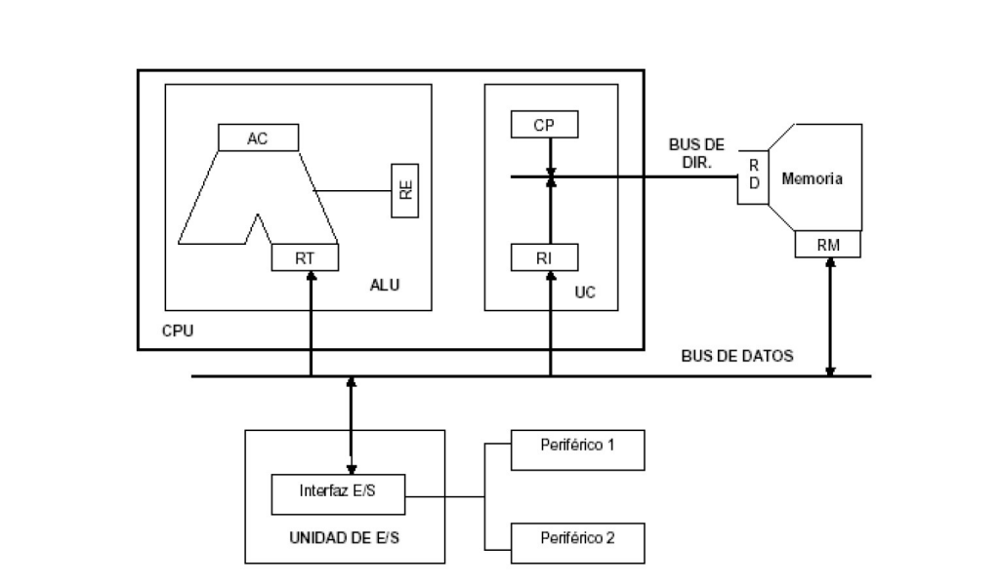
- Unidad Central de Procesamiento: Es la encargada de interpretar y procesar las instrucciones recibidas de un programa a través de la realización de operaciones básicas aritméticas (Suma, resta, multiplicación y división) y lógicas (AND, OR y NOT) realizadas por la Unidad Aritmética Lógica. Para esto utiliza los registros del procesador que son una pequeña memoria que almacena datos binarios y tiene un tiempo de acceso del orden de cien veces menor que la memoria principal, uno de los registros es denominado Program Counter y contiene la dirección de la próxima instrucción que se va a a ejecutar. Se incrementa automáticamente después de cada lectura de instrucción. Y por último se encuentra la unidad de control que es aquella que busca las instrucciones en memoria, las decodifica y genera las señales de control para que el resto de unidades las ejecuten en un ciclo constante de búsqueda-decodificación-ejecución..
- Memoria principal: Almacena de forma temporal (es volátil) tanto las instrucciones del programa como los datos con los que opera, en celdas identificadas por una dirección.
- Sistema de entrada y salida: Genera las señales necesarias para transferir datos y códigos desde y hacia periféricos. Un periférico es aquel dispositivo que es capaz de interactuar con los elementos externos ya sea emitiendo información o recibiéndola.
- Buses: comunican el procesador con el resto de componentes internos del ordenador y con los periféricos de entrada y salida. Un bus está compuesto por conductos, o vías, que permiten la interconexión de los diferentes componentes y, principalmente, con la CPU y La memoria. Los buses se dividen, fundamentalmente, en tres subcategorías principales: bus de datos, de control y bus de direcciones.
La arquitectura Von Neumann, con respecto al hardware, es la arquitectura general en la que se basan los ordenadores, ya que se encuentran organizados usando una serie de tipos de componentes en común. El símil más claro para entenderlo es el de un coche, no todos los coches son iguales, pero todos ellos comparten una serie de elementos con una función e interacción específica; y crean un sistema más complejo que es el coche.
Píldora de conocimiento
El cuello de botella de Von Neumann
Como las instrucciones y los datos están en la misma memoria y viajan por el mismo bus, la CPU no puede leer una instrucción y un dato a la vez. Además, la memoria es mucho más lenta que el procesador, así que muchas veces la CPU está esperando a la memoria. John Backus llamó a este problema cuello de botella de Von Neumann (1977).
Para aliviarlo, los procesadores actuales incorporan memoria caché: una memoria pequeña y muy rápida, dentro del propio chip, que guarda las instrucciones y los datos que más se usan. La arquitectura Harvard, en cambio, separa la memoria de instrucciones de la de datos; la usan muchos microcontroladores, como el de una placa Arduino.
AUTOEVALUACIÓN 2 · APARTADO 2
2.2. Componentes hardware de un sistema informático.
* Conjunto de trabajos realizados en grupo.
3. REDES DE ORDENADORES #
3.1. Introducción
Una de las mayores revoluciones en la tecnología de la informática, tras la invención del circuito integrado ha sido la creación de redes de dispositivos, que permiten compartir datos y recursos, extendiendo las aplicaciones de la computación más allá de la máquina individual.
Actualmente resulta fundamental, tanto a nivel personal como profesional, poder establecer comunicación entre largas distancias de una forma rápida y eficiente. Por ello, las redes están en todas partes, y estas forman parte de ese sistema de conexión global cada vez más extendido como es Internet.
Como decía Andrew S. Tanenbaum en su libro “Redes de computadoras”, una red de ordenadores es un conjunto de computadoras autónomas interconectadas mediante una sola tecnología. O lo que es lo mismo, es un conjunto de equipos conectados entre sí por medio de dispositivos físicos que envían y reciben impulsos eléctricos, ondas electromagnéticas o cualquier otro medio para el transporte de datos, con la finalidad de compartir información y recursos. Por tanto, una “Red Informática” se puede definir como un conjunto de dispositivos conectados entre sí para comunicar y transmitir información y/o recursos.
En la definición se usan dos términos que precisan aclaración como son: comunicación y trasmisión que hay que aclarar:
- Transmisión: es el transporte de la señal donde viajan los datos, es decir, la transmisión sólo se encarga de transportar sin importarle la información en sí. Para transportar la información se usan señales de diversos tipos como son eléctricas, luminosas, acústicas, …
- Comunicación: se refiere al transporte de la información. Cuando emisor y receptor se comunican no importa mucho la señal por la que lo hagan ni sus características físicas, sólo importan los datos que se están proporcionando ambos elementos en la red.
Atención: Si existe comunicación existe transmisión, pero no siempre que se transmite se está comunicando.
Conceptos previos:
- Información: Todo aquello que tiene la capacidad de aportar conocimiento. Expresa el saber en sentido amplio.
- Informática: Ciencia que estudia el tratamiento automático de la información, generalmente mediante la utilización de ordenadores.
- Ordenador: Máquina capaz de aceptar unos datos de entrada, de realizar operaciones con ellos y de mostrar los resultados. Todo ello sin la intervención humana y bajo el control de un programa de instrucciones previamente almacenado en la máquina. En un ordenador se distinguen dos partes esenciales:
- Hardware: Compuesto por los dispositivos físicos. Es lo material, lo que se puede tocar, la parte tangible.
- Software: Compuesto por los programas. Es inmaterial. No se puede tocar, la parte intangible.
- Programa: Conjunto de instrucciones que le dicen a la máquina en cada momento las operaciones que debe realizar. Por tanto, los programas indican a la máquina la forma de obtener los datos de salida (resultados) a partir de los datos de entrada.
3.2. Sistemas de comunicación
Se define “sistema de comunicación” como un conjunto de elementos que, siguiendo unas reglas, intervienen en la transmisión de señales, permitiendo el intercambio de información entre un emisor y un receptor.
De esta definición, podemos inferir los componentes de un sistema de comunicación, que serán:
- Emisor: elemento que transmite la información.
- Receptor: elemento que recibe la información.
- Transductor: dispositivo que transforma la naturaleza de la señal. Por ejemplo: de sonido a electricidad.
- Adaptador: dispositivo que se encarga de adecuar la señal para que se pueda transmitir por el medio físico. Por ejemplo: una tarjeta de red.
- Canal: medio por el cual se transmite la información, utilizando señales convenientemente codificadas.
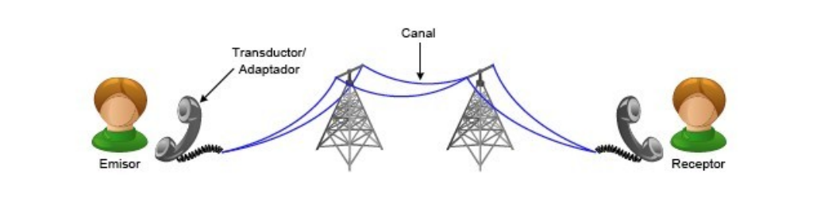
Como podemos deducir, es necesario que emisor y receptor codifiquen la información de forma que ambos se entiendan, por tanto, necesitan crear un conjunto de reglas que regulen la comunicación entre ambos, este conjunto de reglas es lo que conocemos por protocolo de comunicación.
Considerando que la transferencia de la información entre emisor y receptor se lleva a cabo a través de un canal de comunicación, podemos definir este último como el medio físico por el cual se transporta la información convenientemente codificada, siguiendo unos protocolos establecidos.
Así podemos clasificar los sistemas de comunicación según diferentes puntos de vista. Si tenemos en cuenta el medio de transmisión, podemos tener sistemas cableados y sistemas inalámbricos.
En cambio, si el criterio que utilizamos es la direccionalidad de la transmisión, los sistemas de comunicación pueden clasificarse en:
- Simplex: Cuando la comunicación se efectúa en un sólo sentido. Emisor emite, receptor recibe. Ejemplo: Cuando escuchamos música por la radio, nosotros sólo recibimos.
- Semidúplex (half duplex): Cuando la comunicación se realiza en los dos sentidos, pero no de forma simultánea. Emisor emite, receptor recibe, receptor pasa a ser emisor, y emisor pasa a ser receptor. Ejemplo: Hablar por el walkie-talkie.
- Dúplex (full duplex): Cuando la comunicación se realiza en ambos sentidos de forma simultánea. Ambos son emisores y receptores a la vez. Ejemplo: Las redes de ordenadores suelen funcionar de esta forma.
Otros criterios que se utilizan para clasificar las comunicaciones son:
- Según la forma de sincronizar las señales: así tenemos comunicaciones síncronas y asíncronas.
- Según la naturaleza de la señal: este criterio nos lleva a utilizar los términos de comunicaciones analógicas y digitales. Esta última clasificación es más utilizada en el ámbito de las comunicaciones, por lo que será más adecuado hablar de trasmisiones analógicas o digitales. Esto es así porque los ordenadores son sistemas que se basan en el uso de señales digitales.
Además de estos criterios también hay dos conceptos relacionados con las comunicaciones que debemos conocer, uno de ellos es el término Equipo Terminal de Datos (ETD), que serán todos los equipos, ya sean emisores o receptores de información. El otro término es el de Equipo de Comunicación de Datos (ECD) que es el equipo que adapta la señal del ETD a la línea de comunicación.
Píldora de conocimiento
«LO»: el primer mensaje de Internet
El 29 de octubre de 1969 se envió el primer mensaje por ARPANET, la red de la que nació Internet, desde la Universidad de California en Los Ángeles (UCLA) hasta el Instituto de Investigación de Stanford. Querían escribir LOGIN, pero el sistema se colgó después de las dos primeras letras.
El primer mensaje de la historia de Internet fue, por tanto, «LO». Poco después lo intentaron de nuevo y funcionó.
AUTOEVALUACIÓN 3 · APARTADO 3.2
3.3. Ventajas e inconvenientes del uso de redes de ordenadores
La red de ordenadores o red informática se define como un conjunto de equipos informáticos conectados entre sí por medio de dispositivos físicos que envían y reciben impulsos eléctricos, ondas electromagnéticas o cualquier otro medio para el transporte de datos con la finalidad de compartir información y recursos.
La finalidad principal para la creación de una red de ordenadores es compartir los recursos y la información, asegurar la confiabilidad y la disponibilidad de la información, aumentar la velocidad de transmisión de los datos y reducir el coste general de estas acciones.
Si conectamos dos ordenadores entre sí ya tenemos una red, si conectamos más ordenadores, le agregamos impresoras, y nos conectamos a dispositivos que permitan salir a Internet, estamos consiguiendo que nuestra red sea cada vez mayor y pueda disponer de mayores recursos, ya que los recursos individuales pueden compartirse. Esta es la idea principal de las redes, ya que, a medida que conectamos más dispositivos y estos comparten sus recursos, la red será más potente.
Entre las ventajas que proporciona el uso de redes de ordenadores destacar:
- La compartición de información y recursos. Se evita tener duplicada la información o tener que duplicar recursos como impresoras.
- Se abarata los costes. Si se comparte una impresora en una oficina, se puede acceder desde otro lugar sin tener que adquirir nuevas impresoras por cada PC.
- Aumenta la colaboración. Una actividad puede dividirse en partes de forma que cada puesto en la red desempeñe una de esas tareas reduciendo la carga de trabajo.
- Facilita la comunicación. El uso de redes ha conseguido que personas alejadas en espacio que antes no podían comunicarse ahora si la hagan.
Si analizamos algunas de estás ventajas, está claro que utilizar redes de ordenadores para trabajar es mejor que hacerlo de forma aislada.
Son pocos los inconvenientes que vienen asociados a los sistemas en red, sin embargo, existen algunos relacionados sobre todo con la seguridad del mismo.
- Ataques a la información. Si los equipos de la red no son suficientemente seguros pueden ser atacados y vulnerada la información/recursos.
- Mal uso o uso excesivo de la red. Al igual que facilita las comunicaciones y relaciones sociales se debe tener especial cuidado en no hacer un uso excesivo de ellas, ya que pueden perjudicar al individuo y provocar un aislamiento social.
AUTOEVALUACIÓN 4 · APARTADO 3.3
3.4. Clasificación de las redes
Las redes se pueden clasificar según diferentes conceptos, nos centraremos en los conceptos más utilizados.
En función del aislamiento o conexión de un sistema informático a una red:
- Sistemas aislados. Son los ordenadores que no se conectan con ningún otro ordenador, ni comparten información ni recursos.
- Sistemas en red. Son los ordenadores que se conectan entre sí gracias al uso de un medio de conexión concreto. Son accesibles a través de un nombre o una dirección IP.
- Sistemas distribuidos. Este sistemas es similar al sistema en red, ya que los equipos están conectados y compartiendo información pero con la peculiaridad del lugar donde se encuentran los equipos, el nombre del ordenador,… que son datos transparentes al usuario.
En función de su uso:
Una clasificación es:
- Redes publicas: son aquellas redes que dan servicio a cualquier usuario que lo contrate (redes de los operadores de comunicaciones).
- Redes privadas: son aquellas redes gestionadas por entidades privadas como empresas, usuarios particulares,…
Otra clasificación según su uso es:
- Redes dedicadas: esta red es aquella en la que sus líneas de comunicación son diseñadas e instaladas por el usuario o administrador, o bien, alquiladas a las compañías de comunicaciones que ofrecen este tipo de servicio, y siempre para su uso exclusivo. Un ejemplo de este tipo de red puede ser la red local del aula de informática de un instituto.
- Redes compartidas: estas redes son aquellas en las que las líneas de comunicación soportan información de diferentes usuarios. Se trata en todos los casos de redes de servicio público ofertadas por las compañías de telecomunicaciones bajo cuotas de alquiler en función de la utilización o bajo tarifas por tiempo. Pertenecen a este grupo las redes telefónicas conmutadas y las redes especiales para transmisión de datos. Ejemplos de este tipo de redes son: la red de telefonía fija, la red de telefonía móvil, las redes de acceso a Internet de los operadores de telefonía, etc.
En función de su localización geográfica de la red.
La localización geográfica de la red es un factor a tener en cuenta a la hora de diseñarla y montarla.
- PAN (Personal Area Network): Una red de área personal es una red que se extiende pocos metros. Suelen ser inalámbricas y de baja velocidad. Ejemplo: La conexión por Bluetooth de un Smartphone con unos auriculares inalámbrico.
- LAN (Local Area Network): Estas redes están formados por uno o varios segmentos de red conectados mediante dispositivos especiales. Son utilizadas por pequeñas y medianas empresas. Su cobertura suele abarcar como máximo un edificio. El medio de transmisión que se utiliza de forma general es el cable, aunque la transmisión también puede ser inalámbrica (WiFi).
- CAN (Campus Area Network): Esta red se extiende a otros edificios dentro del mismo campus o polígono industrial. El espacio suele ser bastante mayor que el ocupado por una red LAN.
- MAN (Metropolitan Area Network): Esta red ocupa municipios, ciudades o localidades completos. Una red MAN está compuesta por redes LAN que se interconectan usando determinados componentes de red.
- WAN (Wide Area Network): Esta red permite unir redes a través de varias ciudades, regiones, países, continentes, … Son utilizadas por grandes empresas que tienen distribuida su organización a lo largo del mundo.
Píldora de conocimiento
Internet viaja bajo el mar
Más del 95 % del tráfico de Internet entre continentes no va por satélite, sino por cables de fibra óptica tendidos en el fondo del mar. Hay más de 500 sistemas de cable submarino en servicio.
Uno de ellos, MAREA, une Sopelana (Bizkaia) con Virginia Beach (Estados Unidos) a lo largo de unos 6 600 km. Estos cables son el mejor ejemplo de red WAN: conectan redes de distintos países y continentes.
En función del medio y tipo de señal usada en la red.
Teniendo en cuenta la naturaleza de las señales, se clasifican en:
- Analógicas: trasmiten datos variando una magnitud física de forma continua. Suelen afectarle el ruido y tienen un pequeño ancho de banda.
- Digitales: transmiten la información codificada en forma de valores discretos de la magnitud asociada al medio físico. Son más inmunes al ruido (la señal se puede regenerar) y permiten mayores velocidades de transmisión, compresión y cifrado.
En función de como ofrecen los servicios:
Estas redes se distinguen en función de como comparten la información:
- Redes cliente-servidor: son aquellas redes en las que un equipo de la red (servidor) ofrece servicios al resto de equipos (clientes). El servidor puede ser tener unas prestaciones superiores a los equipos clientes, pero dependerá de los servicios que preste en la red.
- Redes entre iguales (peer to peer): es una red dónde todos los equipos conectados pueden compartir información con los demás actuando como cliente y servidor simultáneamente.
En función del tipo de conexión de la red:
- Redes cableadas: En este tipo de redes se utilizan diferentes tipos de cables para conectar los ordenadores.
- Redes inalámbricas: Son las redes que no necesitan cables para comunicarse.
- Redes mixtas: Son redes en las que algunos equipos se conectan de manera cableada, mientras que otros lo hacen de manera inalámbrica.
En función de la transferencia de la información:
Otra forma de clasificar las redes es en función de las técnicas empleadas para transmitir la información desde el emisor hasta el receptor. Se clasifican en:
- Redes de difusión (multipunto): Se trata de redes en las que la información que envía el equipo Emisor siempre llega a todos los equipos conectados a la red. El equipo destinatario (Receptor) es el encargado de reconocer y recoger la información que va dirigida a él. Este tipo de redes aparece cuando todos los nodos comparten el mismo medio de transmisión. Es decir, los datos enviados por una máquina llegan a todas las demás. Al recibirlos cada máquina comprueba si están dirigidos a ella, en cuyo caso, los procesa; si no, los ignora.
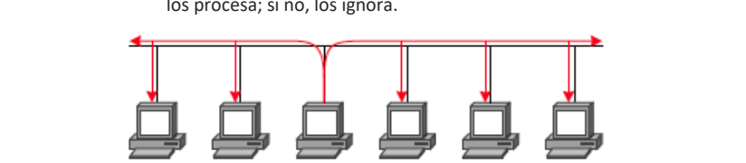
- Redes conmutadas (punto a punto): Se trata de redes en las que un equipo Emisor selecciona un equipo Receptor con el que quiere comunicarse y la propia red es la encargada de habilitar un camino a través del cual fluye la información. Los datos, para ir del origen al destino, pueden tener que visitar primero una o más máquinas intermedias. Para ello, las redes conmutadas utilizan varias técnicas:
- Conmutación de circuitos: La comunicación entre dos nodos de la red se realiza estableciendo una llamada entre dichos puntos y reservando un camino físico entre ellos, que no queda disponible para otros nodos hasta el final de la comunicación. Un ejemplo de conmutación de circuitos es la red telefónica.
- Conmutación de mensajes: la información no viaja por un camino preestablecido, sino que se acompaña de la dirección o identificación del nodo destinatario. El mensaje va pasando por distintos nodos que lo almacenan y lo encaminan en función del tráfico y de la disponibilidad de nodos de conmutación.
- Conmutación de paquetes: siguiendo la técnica de conmutación de mensajes, estos son divididos en fragmentos denominados paquetes. Cada paquete tiene un tamaño máximo conocido y limitado. Se distinguen dos tipos en este método:
- No orientado a la conexión: por datagrama, haciendo que cada paquete pueda circular por una ruta diferente, debiendo ser reordenados en el destino para recomponer el mensaje. Un aplicación de este tipo de comunicación es el protocolo IP
- Orientado a la conexión: se establece un previamente un circuito virtual y todos los paquetes siguen esa misma ruta, por tanto llegan en el mismo orden en que se enviaron.
En función de la topología elegida:
Llamamos por topología a la forma en la que están interconectados los elementos de la red entre sí. Ahora bien, no sólo hablamos de topología física, entendida como la forma geométrica en que están distribuidas las estaciones de trabajo y los cables que las conectan, si no que también existe una topología lógica, que se refiere a la forma en que las máquinas se comunican a través de los componentes físicos.
Un diseño de red puede tener distintas topología física y lógica, es decir, la forma en que esté el cableado de red no tiene por qué reflejar necesariamente la forma en que viajan las señales a través de ellas.
En función de la topología, podemos clasificar la red como:
Topología en Bus
Todos los nodos se conectan a una única línea de transmisión que comparten. Cada host está conectado a un cable común por el que circula toda la información. Cada ordenador recoge sólo la que le corresponde. El cable debe acabar en dispositivos llamados terminadores que absorben la señal eléctrica que transmite los datos para evitar que se refleje y vuelva por el cable.
La topología de bus permite que todos los dispositivos de la red puedan ver todas las señales de todos los demás dispositivos, lo que puede ser ventajoso si desea que todos los dispositivos obtengan esta información. Sin embargo, puede representar una desventaja, ya que es común que se produzcan problemas de tráfico y colisiones, que se pueden paliar segmentando la red en varias partes. Además, la ruptura del cable central hace que los hosts queden desconectados y cuanto mayor sea el número de hosts conectados peor será el rendimiento de la red.
- Ventajas: Requiere poco cableado.
- Inconvenientes: Si el bus se rompe en algún punto, pierde su efectividad como medio transmisor y todos los nodos quedan incomunicados.
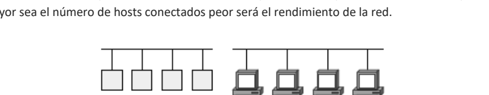
Topología en Anillo
Cada nodo se conecta con el anterior y el siguiente formando un bucle cerrado. En una topología de anillo todos los nodos están conectados a un cable circular. Cada estación sólo tiene contacto directo con otras dos. A diferencia de la topología en bus no hay terminadores en los extremos. Las señales viajan alrededor del anillo en una dirección y pasan a través de cada equipo, que actúa como repetidor para amplificar la señal y enviarla al siguiente equipo por lo que se conserva la potencia de la señal. Puede tener un anillo doble para aumentar la fiabilidad.
- Ventajas: Requiere poco cable y puede gestionar mejor que las redes con bus los entornos con mucho tráfico.
- Inconvenientes: Si el cable se rompe en algún punto, toda la red deja de funcionar y que los equipos sólo pueden enviar los datos de uno en uno pues el método de transmisión de datos alrededor del anillo es el paso de testigo (token passing)
Intersección de Anillos
Son varios anillos interconectados dos a dos a través de un nodo común.
- Ventajas: Si el cable se rompe en algún punto, sólo deja de funcionar un anillo.
- Inconvenientes: Si se rompe el nodo común dejan de funcionar los dos anillos que interconecta.
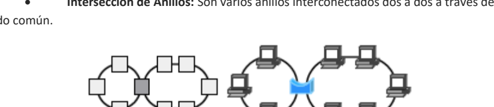
Topología en Estrella
Los equipos se conectan a un nodo central que se encarga de distribuir la información y controlar la comunicación. En una topología en estrella, los segmentos de cable de cada equipo en la red están conectados a un componente central o concentrador. Un concentrador es un dispositivo que conecta varios equipos juntos. Las señales se transmiten desde el equipo, a través del concentrador, al destino deseado.
- Ventajas: Fácil de instalar, ampliar y diagnosticar; si falla un equipo o su cable, el resto sigue funcionando.
- Inconvenientes: La rotura del nodo central deja incomunicados a todos los nodos que se conectan a él. Requiere más cable que el bus o el anillo.
Topología en Estrella Extendida
Es una estrella jerarquizada que se ramifica en subestrellas. Todo nodo que se conecta al centro de la estrella es, a su vez, centro de una subestrella. Es muy similar al árbol, pero su propósito principal es favorecer la comunicación local dentro de cada subestrella.
- Ventajas: La rotura del centro no impide que los nodos puedan comunicarse entre sí dentro de una misma subestrella. Requiere menos cable que la estrella simple. El ancho de banda se reparte de manera eficiente.
- Inconvenientes: Son necesarios más dispositivos de interconexión.
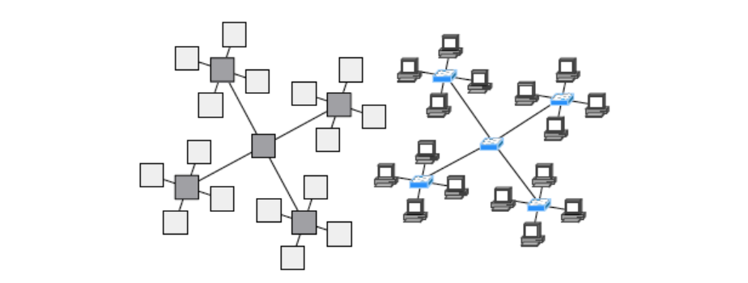
Topología en Malla y Malla Completa
Malla: Cada nodo se conecta con los nodos adyacentes.
- Ventajas: Bastante fiable. La rotura de un enlace o un nodo no impide que los nodos puedan seguir comunicándose entre sí, puesto que existen rutas alternativas.
- Inconvenientes: Es una red bastante costosa puesto que requiere gran cantidad de cable.
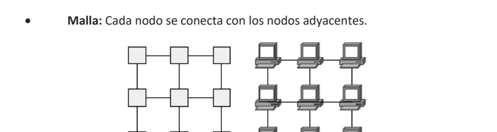
Malla Completa: Todos los nodos están conectados con todos. En una topología de malla, cada equipo está conectado a cada uno del resto de equipos por un cable distinto. Esta configuración proporciona rutas redundantes a través de la red, de forma que, si un cable falla, otro transporta el tráfico y la red sigue funcionando.
- Ventajas: Es la red más fiable. La rotura de un enlace o un nodo no impide que los nodos puedan seguir comunicándose entre sí, puesto que existen rutas alternativas.
- Inconvenientes: Es la red que requiere mayor cantidad de cable.
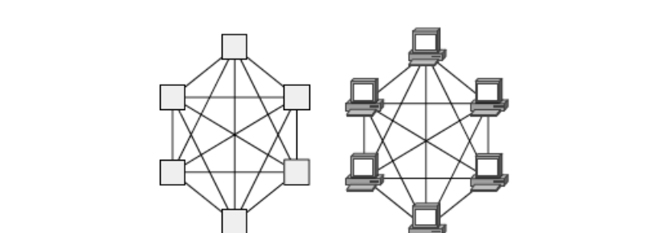
Píldora de conocimiento
¿Cuántos cables necesita una malla completa?
En una malla completa cada nodo se une con todos los demás. Con n nodos, cada uno necesita n − 1 enlaces y, como cada cable une dos nodos, el total es n · (n − 1) / 2.
Con 4 nodos bastan 6 cables; con 10 nodos ya son 45; con 50 nodos, 1 225. Por eso la malla completa solo se usa entre pocos nodos muy importantes (por ejemplo, los routers principales de un operador) y en el resto de la red se usan topologías más baratas.
Topología Celular
Es un área geográfica dividida en regiones (celdas) para los fines de la tecnología inalámbrica. En la topología celular, no hay enlaces físicos, sólo ondas electromagnéticas. Las tecnologías celulares se pueden comunicar entre sí directamente (con limitaciones de distancia), o se pueden comunicar solamente con las celdas adyacentes. Normalmente, las topologías basadas en celdas se integran con otras topologías.
- Ventajas: No utiliza cables y permite la movilidad de los nodos.
- Inconvenientes: Las señales se encuentran presentes en cualquier lugar de la celda y, de ese modo, pueden sufrir perturbaciones (ruido) y violaciones de seguridad (acceso de intrusos a la red).
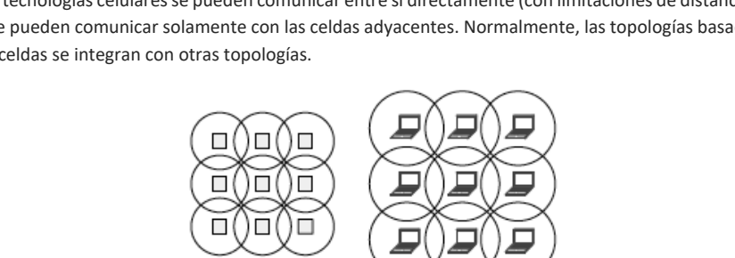
Topología Irregular o Mixta
Consiste en una topología cuya forma no se corresponde con ninguna de las otras, o que es una mezcla de distintas topologías básicas. Las redes con esta topología suelen ser el resultado de la agrupación de redes pequeñas para obtener otras más grandes.
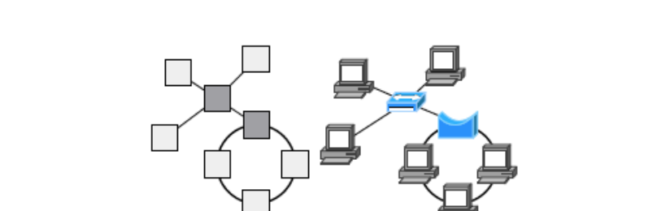
Topologías híbridas
En una topología híbrida, se combinan dos o más topologías para formar un diseño de red completo. Raras veces, se diseñan las redes utilizando un solo tipo de topología. Por ejemplo, es posible que se desee combinar una topología en estrella con una topología de bus para beneficiarse de las ventajas de ambas. Las más utilizadas son: topología en estrella-bus y topología en estrella-anillo.
o En estrella-bus: Varias redes de topología en estrella están conectadas a una conexión en bus. Cuando una configuración en estrella está llena, podemos añadir una segunda y utilizar una conexión en bus para conectar las dos topologías en estrella. En una topología en estrella-bus, si un equipo falla, no afectará al resto de la red. Sin embargo, si falla el componente central, o concentrador, que une todos los equipos en estrella, todos los equipos adjuntos al componente fallarán y serán incapaces de comunicarse.
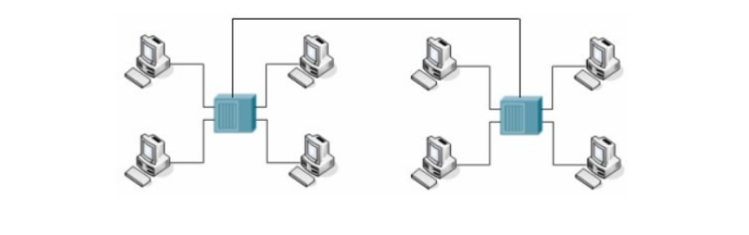
o En estrella-anillo: Los equipos están conectados a un componente central al igual que en una red en estrella. Sin embargo, estos componentes están enlazados para formar una red en anillo. Al igual que la topología en estrella-bus, si un equipo falla, no afecta al resto de la red. Utilizando el paso de testigo, cada equipo de la topología en estrella-anillo tiene las mismas oportunidades de comunicación. Esto permite un mayor tráfico de red entre segmentos que en una topología en estrella-bus.
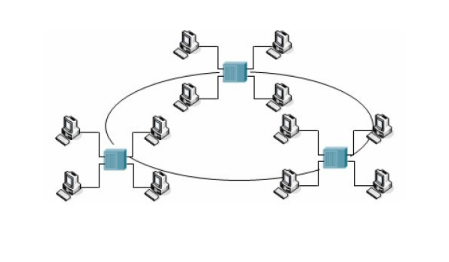
AUTOEVALUACIÓN 5 · APARTADO 3.4
4. ELEMENTOS DE UNA RED #
Cuando hablamos de redes de ordenadores, teniendo en cuenta su definición de varios ordenadores conectados entre sí formando lo que se denomina circuito de datos, podemos deducir que en la red existen ordenadores que son emisores o receptores, medios por los que circula la información y dispositivos adicionales que permiten dicha comunicación.
- Ordenador, PC o host: Se conocen como ETD (Equipo Terminal de Datos) Son los elementos iniciales y finales de la transmisión de la información. En la red cualquier ordenador puede enviar un dato, ser emisor de información, o recibir un dato, se receptor de la información. Existen determinados equipos que según la función que desempeñan solo pueden ser receptores o emisores.
- Medio: elemento que se usa para la transmisión de la señal.
- ECD: elemento que adapta la señal del ETD al medio (p.ej. Un módem). Internamente puede incluir transductores para convertir la naturaleza física de la señal con el fin de que pueda ser transmitida sobre el medio físico.
- Otro elemento del sistema de comunicación: dispositivo de red que se encargan de amplificar la señal que viaja por un medio concreto, repetir la misma, etc.
Actividad 1
Identifica, si es posible, estos elementos en la red del aula o de tu casa.
4.1. ETD
Existen diferentes tipos de terminales:
En función de la autonomía que poseen:
- Terminal simple o tonto: este terminal está compuesto por un teclado y una pantalla. Puede introducir y visualizar información, pero no procesar ésta.
- Terminal autónomo: tiene capacidad para procesar de forma independiente la información. Está provisto de procesador y memoria para tal fin. Tipo especial de terminar autónomo es el terminal programable.
Según el fin para el que se crea:
- Terminal de propósito general. Puede desempeñar una gran variedad de funciones.
- Terminal de propósito específico. Solo se crea para desarrollar una función concreta. Un ejemplo son los cajeros automáticos, los TPV, los lectores de código de barras, las terminales de fichaje...
Píldora de conocimiento
Los terminales «tontos» siguen vivos
Los terminales simples de los años 70, como el VT100 de DEC (1978), eran solo pantalla y teclado conectados a un ordenador central. Cuando abres una terminal en Linux, el programa imita (emula) a estos aparatos: por eso se llama emulador de terminal.
La idea ha vuelto con los clientes ligeros (thin clients) y los escritorios virtuales: el equipo del usuario procesa muy poco y el trabajo real se hace en un servidor.
4.2. ECD
Es un dispositivo de red que se encarga de convertir la naturaleza de la señal. Por ejemplo, si tenemos una señal de tipo eléctrica la convierte en lumínica, etc..
Ejemplo de transductor sería una bombilla o diodo, a la que le llega una señal eléctrica y la convierte en luminosa; supuesto sería una célula fotoeléctrica el fotodiodo que se encargará de recoger las señales lumínicas y las convertirá en eléctricas.
Actividad 2
¿Qué otros tipos de transductores existen? Pon algún ejemplo.
4.3. El medio
Es el elemento que se encarga del transporte de la señal entre emisor y receptor. Cada tipo de señal se transmite por un medio concreto, por ejemplo, la señal eléctrica por medios metálicos, la señal luminosa por fibra de vidrio, etc. Las señales electromagnéticas usarán multitud de medio en función de la frecuencia de la señal, cable, aire, etc.
4.4. Otros elementos del sistema de comunicación
Como otros elementos definimos aquellos que se ubica en algún lugar entre emisor y receptor del circuito de transmisión con un fin concreto. Por ejemplo, cuando emisor y receptor están muy alejados en espacio y queremos enviar una señal entre ellos por el medio que sea, esta no acabará llegando por mucha potencia que tenga en el emisor, ya que acabará deteriorándose en el camino para evitar esta pérdida se colocará en el medio un dispositivo amplificador que aumentará la señal para que llegue a su destino adecuadamente. Ejemplo de estos dispositivos son: Amplificadores, Repetidor, …
Actividad 3
Busca información sobre alguno de los elementos listados o similares que conozcas. Redacta un documento incluyendo la función que desempeñan y sus características principales.
AUTOEVALUACIÓN 6 · APARTADO 4
5. COMPONENTES DE UNA RED #
En este punto daremos un repaso a algunos de los componentes más importantes, de los que componen una red informática. Como ya hemos visto, una red de ordenadores o red informática, es un conjunto de equipos informáticos conectados entre sí por medio de dispositivos físicos que envían y reciben impulsos eléctricos, ondas electromagnéticas o cualquier otro medio para el transporte de datos, con la finalidad de compartir información y recursos y ofrecer servicios. Este término también engloba aquellos medios técnicos que permiten compartir la información.
Por tanto, podemos considerar componentes de la red a los propios ordenadores con sus sistemas operativos que permiten utilizarla, y a todo el hardware y el software que ayuda a que la red funcione. En este punto nosotros nos centraremos en el hardware, ya que el software lo vas a estudiar en siguientes unidades.
Algunos de estos componentes serán:
- El cableado de red y sus conectores, que permite la transmisión de la señal.
- El rack o armario de conexiones, es un bastidor destinado a alojar equipamiento electrónico, informático y de comunicaciones.
- Los patch panel, paneles de conexión que sirven de terminadores del cableado y ayudan a organizarlo.
- Las tarjetas de red, que permitirán la conexión del ordenador, bien por cable o de forma inalámbrica.
- Los conmutadores o switch, que permiten la conexión de diferentes ordenadores entre sí y de segmentos de red entre sí.
- Los enrutadores o router, también conocidos como encaminadores, que permiten conectar redes diferentes, como por ejemplo una red de área local con Internet.
- Los puntos de acceso, que permiten la interconexión de dispositivos inalámbricos entre sí, y/o la conexión de dispositivos cableados con los inalámbricos.
- Los cortafuegos, que pueden ser dispositivos hardware con un software específico para bloquear acceso no autorizados a la red, o software específico que se instale en los ordenadores y/o servidores para evitar los accesos no autorizados.
- Los servidores, que no son más que ordenadores con un sistema operativo específico para actuar como servidor, o con sistemas operativos no servidores, pero con software de servidor.
Además de estos componentes, también consideramos como parte de la red a los ordenadores que trabajarán en red, que en muchos casos se les llama estaciones de trabajo. Cualquier dispositivo que se pueda conectar a la red para prestar algún servicio, tales como impresoras, discos duros de red, o cualquier periférico que este conectado a algún ordenador de la red, es también un componente de la red y se les suele denominar nodos de red.
Antes de desarrollar alguno de los conceptos explicados, cabe mencionar que entre los servidores de red que prestarán servicio a la red, podemos encontrar: servidores de archivos, de correo, de páginas web, de impresión, etc.
AUTOEVALUACIÓN 7 · APARTADO 5
Relaciona los conceptos con sus definiciones:
| Concepto | Definición correcta |
|---|---|
| Nodo de red | 2. Cualquier dispositivo o periférico que pueda conectarse a la red o utilizarse a través de la red. |
| Estación de trabajo | 4. Ordenador que trabaja en red. |
| Router | 1. Conecta redes distintas reenviando paquetes por IP. |
| Switch | 3. Conecta equipos de una misma red reenviando tramas por MAC. |
5.1. Medios físicos guiados y no guiados
El medio de transmisión constituye el canal que permite la transmisión de información entre dos terminales en un sistema de transmisión. Por tanto, en las redes de ordenadores serán los canales que transmiten la información entre los nodos de la red, ya sean ordenadores, servidores, etc. Las transmisiones se realizan habitualmente empleando ondas electromagnéticas que se propagan a través del canal.
A veces el canal es un medio físico y otras veces no, ya que las ondas electromagnéticas son susceptibles de ser transmitidas por el vacío. Por esto podemos clasificar los medios de transmisión como:
- Medios guiados: conducen las ondas electromagnéticas a través de un camino físico.
- Medios no guiados: proporcionan un soporte para que las ondas se transmitan, pero no las dirigen.
Por tanto, cuando hablemos de medios guiados nos estaremos refiriendo a los distintos tipos de cables que se pueden utilizar. Entre los tipos de cables más utilizados encontramos el par trenzado, el coaxial y la fibra óptica. Más adelante daremos más detalles sobre ellos.
Cuando nos referimos a medios no guiados nos estamos refiriendo a la posibilidad de transmitir ondas electromagnéticas, a través del aire o del vacío. Esta particularidad permite montar redes inalámbricas y tener sistemas de telecomunicaciones sin cable, como por ejemplo el teléfono móvil o la conexión a Internet a través del móvil.
Ya hablemos de medio físico o guiado o no guiados, cualquier medio que se use para transmitir una información tendrá una serie de características que determinarán su calidad.
- Velocidad de transmisión de los datos: se refiere al número de bits que es capaz de transmitir en un segundo. Se mide en bps (bits por segundo) y sus múltiplos (Mbps, Gbps).
- Ancho de banda que soporta: podemos decir que el ancho de banda es la diferencia entre la mínima y la máxima frecuencia de señal que puede transmitir el medio físico. Un canal puede ser utilizado por señales de diferente frecuencia. Así, si puede transmitir muchas señales, la información que atravesará el canal será mayor.
- Espacio máximo entre dos repetidores: el medio físico que se utiliza dictará la distancia que deben tener como máximo dos nodos de la red para que puedan comunicarse. Además, si debemos configurar una red con mucho ordenador y bastante extensa probablemente tendremos que hacer uso de repetidores que deban contemplar esta distancia.
- Fiabilidad: la fiabilidad de la red depende en gran medida del medio que se use. Una red cableada será más fiable que una red inalámbrica.
5.1.1. Medios físicos guiados
Son aquellos en los que la señal se transmite de forma que el medio guía está. Existe un elemento, como es el cable de cobre, la fibra de vidrio, etc., que se encargará de establecer un camino por el que debe circular la señal portadora. Entre los medios físicos guiados se encuentra el cable par trenzado, cable coaxial y fibra de vidrio.
Cable par trenzado
El cable de par trenzado está formado por pares de cobre, de forma que cada par está entrelazado con objeto de evitar o reducir interferencia. El problema de la interferencia es algo a tener muy en cuenta ya que si se produce ruido la información transportada puede quedar ilegible. Las interferencias suelen subsanarse con el uso de una tela metálica que cubre a todos los grupos de pares que forma un cable o a cada par de hilos.
Píldora de conocimiento
¿Por qué se trenza el cable?
Alexander Graham Bell patentó el par trenzado en 1881 para las líneas telefónicas. Al trenzar los dos hilos de un par, una interferencia externa afecta casi por igual a los dos. El receptor se fija en la diferencia entre ambos hilos, así que la interferencia se anula en gran parte.
Además, cada par tiene un paso de trenzado distinto (unos más apretados que otros) para que los pares no se interfieran entre sí. A esa interferencia entre pares se le llama diafonía (crosstalk). Por eso, al crimpar un conector, hay que destrenzar los hilos lo menos posible.
Se pueden clasificar los cables para trenzados en función de si están o no apantallados:
- UTP (par trenzado sin apantallar): Son hilos de cobre sin apantallar, es decir, no tienen una malla metálica protectora. Son lo más económicos, pero no tienen tanta fiabilidad como el resto, ya que solo reducen interferencia con el trenzado del cable.
- FTP (par trenzado con pantalla global): Este tipo de cable es de nivel intermedio, ya que, si dispone de lámina de protección, pero esta lámina cubre todos los hilos de cobre.
- STP (par trenzado apantallado): este tipo de cable trenzado es el más fiable ya que cada par de hilos de cobre, además de estas entrelazados, dispone de una malla metálica que los recubre. Es más caro que el UTP y más rígido ya que en su interior encontramos más elementos materiales.
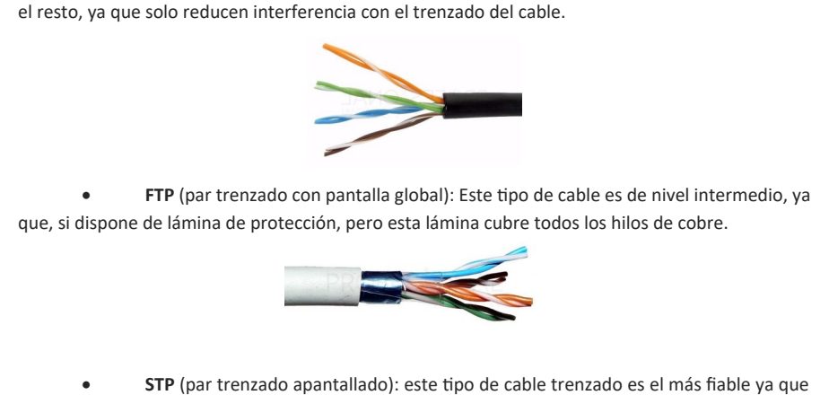
Tipos de cables par trenzados según categorías:
- Categoría 1: transmisión telefónica de voz, no de datos. El cable para trenzado telefónico suele estar constituido por cuatro hilos de cobre en lugar de ocho como es habitual un en un cable de red.
- Categoría 3: 16MHz. Hasta 10Mb/s. Obsoleta para redes de datos modernas. Se utilizó también en telefonía.
- Categoría 5: 100MHz. Hasta 100Mb/s. Obsoleto. Sustituido por Categoría 5e.
- Categoría 5e: 100MHz. Hasta 1Gb/s hasta 100m. Utilizado en redes domésticas y oficinas con Gigabir Etherneet. También puede admitir 2.5 Gb/s en condiciones adecuadas.
- Categoría 6: 250 MHz. 1Gb/s hasta 100m,; 10Gb/s en distancias más cortas. Redes domésticas y profesionales.
- Categoría 6a: 500 MHz. Hasta 10Gb/s hasta 100 m. Instalaciones profesionales que requieren altas prestaciones.
- Categoría 7: 600MHz. 10Gb/s hasta 100m. Cableado apantallado en determinadas instalaciones.
- Categoría 7a: 1GHz. Hasta 10Gb/s hasta 100m. Instalaciones especializadas. Poco habitual en nuevas redes convencionales.
- Categoría 8: 2GHz. Hasta 25Gb/s o 40Gb/s hasta 30 m. Centros de datos y conexiones de alta velocidad entre equipos cercanos.
El cable de par trenzado utiliza conectores RJ 45. Para cable de dos pares RJ 11.
Hoy día, la mayoría de las redes de área local instaladas (LAN) que utilizan medios guiados, usar este tipo de cable.
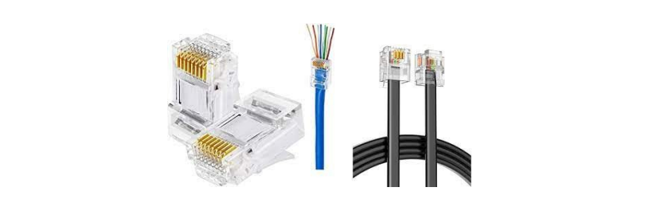
Cable Coaxial
El cable coaxial fue muy usado en las primeras configuraciones de redes LAN y poco a poco ha sido sustituido por el cable par trenzado estudiado en el apartado anterior. Hoy día, El coaxial hoy se usa en TV (antena y satélite), en redes de cable HFC de los operadores (DOCSIS) y en videovigilancia analógica.
Las características de un cable coaxial son:
- El cable puede ser de mayor longitud sin que se produzcan pérdida de información.
- Es menos sensible a interferencia debido a su formato.
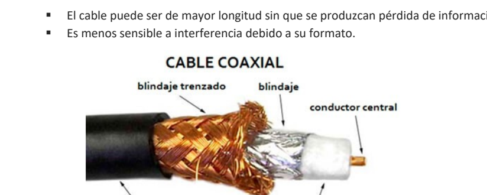
Este tipo de cable usa un conector BNC. Además, existe otros elementos de conexión, como conector T que permite conectar dos extremos del cable y las NIC correspondiente o terminadores.
Existen dos tipos de cable: coaxial fino y coaxial grueso.
Fibra óptica
Este medio permite la transmisión de señales ópticas que no están sujetas a interferencia electromagnética. Como fuente de luz para la transmisión de información se usan rayos láser o diodo LED.
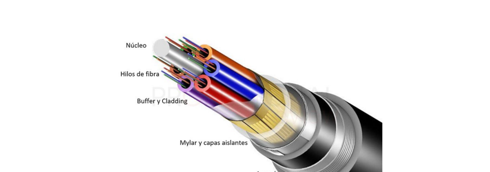
Existen diferentes tipos de conectores para la fibra óptica: SC, FC, LC, FDDI, ST,….
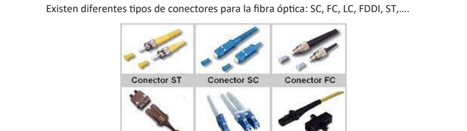
Existen dos tipos de fibra óptica: monomodo y multimodo. En la primera solo se transmite un haz de luz y éste se hace de forma paralela al medio por el que circula. En la fibra multimodo la luz puede seguir varias trayectorias (modos) reflejándose en la frontera núcleo-revestimiento.
Píldora de conocimiento
La luz en la fibra no va a 300 000 km/s
En el vacío la luz viaja a unos 300 000 km/s, pero dentro del vidrio de la fibra va más despacio, a unos 200 000 km/s (aproximadamente dos tercios).
Por eso una señal tarda como mínimo unos 30 ms en recorrer los aproximadamente 6 000 km de cable entre Europa y América (solo ida). Ese tiempo se llama latencia de propagación, y contratar más megas (más Mbps) no lo reduce.
Actividad 4
- Indica los pasos para fusionar la fibra óptica.
- Investiga sobre la fibra oscura.
5.1.2. Medios físicos no guiados
La información se envía mediante señales electromagnéticas que se propagan en el medio libre, con o sin atmósfera. Para que se produzca la transmisión de información debe existir antena que se encarguen de la emisión y recepción de esta onda.
La transmisión no guiada pueden ser: direccionales y omnidireccionales.
- Transmisión direccional. Es aquella en la que la señal se encuentra para ser enviada en una única dirección, de forma que no deben existir obstáculos entre antena emisora y receptora que obstaculicen la transmisión.
- Transmisión omnidireccional. La información se envía en todas direcciones con lo que puede ser recibida por varias antenas (MIMO).
Cada vez es más común el uso de medios no guiados en la transmisión en la construcción de redes de ordenadores, no solo en redes personales o LAN, sino en redes MAN. La facilidad de instalación y uso es una de sus ventajas. Sin embargo, cuando no disponemos de cable y es el medio libre el que usamos para transmitir la información, la climatología, la geografía del medio,…, son inconveniente a tener en cuenta.
Son medio físico no guiados:
- Sistema radio terrestres, radiotransmisión. Las ondas de radio son fáciles de generar, pueden viajar largas distancias, atraviesan pared accediendo al interior del edificio y son omnidireccionales.
- Sistema de microondas. Este tipo de señal es direccional ya que por encima de los 100 MHz la señal viaja en línea recta y puede orientarse a un receptor concreto. Utiliza este tipo de medios en las televisiones por satélite.
- Sistema de ondas infrarroja. Para la comunicación entre dos dispositivos que no estén a demasiada distancia.
Actividad 5
- ¿Qué es un satélite geoestacionario? ¿cómo se producen las comunicaciones cuando usamos este dispositivo?
- Investiga como instalar una antena de TV y parabólica.
AUTOEVALUACIÓN 8 · APARTADO 5.1
5.2. Dispositivos de red
En apartados anteriores, hemos visto el modelo de referencia OSI, que se divide en siete capas. Cada una de esta capa con una función bien determinada. Las redes que hoy conocemos siguen como referencia este modelo, de forma que deben existir dispositivos componentes software que se adapten a la funcionalidad de cada una de ellas. Así, a la hora de instalar una red debemos tener en cuenta que existen dispositivos que trabajan a nivel físico, a nivel de enlace y a nivel de red, desempeñando las funciones que esta capa deben realizar en la teoría.
5.2.1. Dispositivos hardware de nivel físico
Modem
Dispositivo encargado de modular/demodular la señal. Cuando la información tiene que ser enviada ha de serlo a través de un medio físico concreto con determinada característica, así, la señal debe ser adaptada al medio físico, es decir, debe ser modulada y cuando la señal se recibe debe realizarse el proceso inverso, es decir, debe ser demodulada. Existen dos tipos: interno y externo.
Hoy día, cuando se habla de este dispositivo nos referimos normalmente aquel que se encarga de conectar nuestra red de casa a la red de área extensa. Son ejemplos de estos adaptadores: módem RDSI (conecta nuestra red interna a la red digital RDSI), módem ADSL (conexión a través de la línea telefónica), módem cable (conexión a través de líneas coaxiales implementada en un principio para ver televisión) y módem inalámbrico (conexión mediante antena a una red pública).
Tanto el Módem ADSL como el Módem Cable suelen venir equipados con conector RJ45, por lo que se conectan directamente a la tarjeta Ethernet del ordenador mediante un cable de red directo.
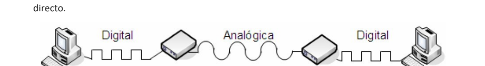
Repetidores y amplificadores
Se encarga de amplificar o regenerar la señal, debido a que en larga distancia ésta se atenúa pudiendo llegar a desvanecerse. Este dispositivo restaura la señal original permitiendo que alcance el equipo receptor de la información.
- Amplificador
Se utiliza principalmente en transmisión de datos analógicos. El amplificador toma la señal de entrada y multiplica su amplitud (la amplía). Tiene el problema de que también amplifica el ruido. Por este motivo no podemos encadenar todos los amplificado.
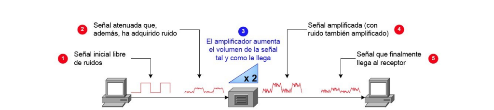
- Repetidor
Se utiliza en transmisión de datos digitales. El repetidor toma la señal de entrada, la lee interpretándola como unos y ceros y regenera la señal a partir de esta información binaria. De esta forma, a la salida se obtiene una señal limpia de ruidos.
Se pueden encadenar todos los repetidores que sean necesarios siempre que no se sobrepase la distancia máxima permitida entre repetidor y repetidor.
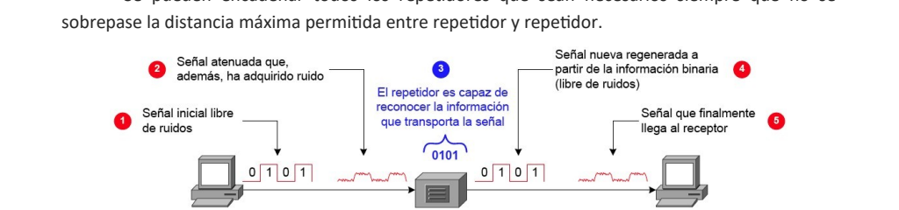
Tanto el repetidor como el amplificador se ven afectados por la distancia, ya que, si les llega la señal muy atenuada, ninguno de los dos será capaz de regenerarla. Por este motivo, existe un límite en la distancia máxima que puede existir entre repetidores y amplificadores.
Ahora bien, ninguno ayuda a reducir o gestionar el tráfico en una red.
Concentradores o Hubs (todo el hub es un dominio de colision (si le llega por un puerto lo pasa por todos, por eso se denomina de colision)
También llamados repetidores multipuerto. Comenzaron a utilizarse con la finalidad de concentrar todas las conexiones de una LAN en un mismo punto y así facilitar la localización de averías. Un concentrador de cableado es un dispositivo que permite centralizar las conexiones de los distintos nodos de red, manteniendo indicadores luminosos de su estado e impidiendo que el fallo de una conexión haga caer toda la red.
Cada estación se conecta directamente al concentrador con un cable directo (p. ej. T568B y T568B). Si este enlace falla, sólo queda aislada esa estación.
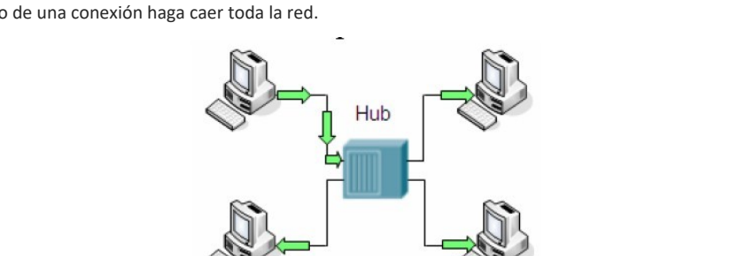
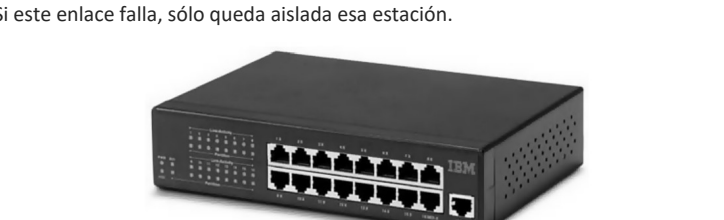
Al conectar una serie de estaciones al concentrador, se obtiene un segmento de red con una topología física en estrella. Según la topología lógica, los concentradores se clasifican en dos tipos:
- Concentrador con topología lógica en bus (HUB): Hace que la red se comporte como un bus, enviando las señales que le llegan por todos los demás puertos. La información que envía una estación la reciben todas las demás. El bus se comporta como un medio de difusión (puede haber colisiones).
- Concentrador con topología lógica en anillo (MAU): Hace que la red se comporte como un anillo. La señal que recibe por un puerto la reenvía sólo por el siguiente.
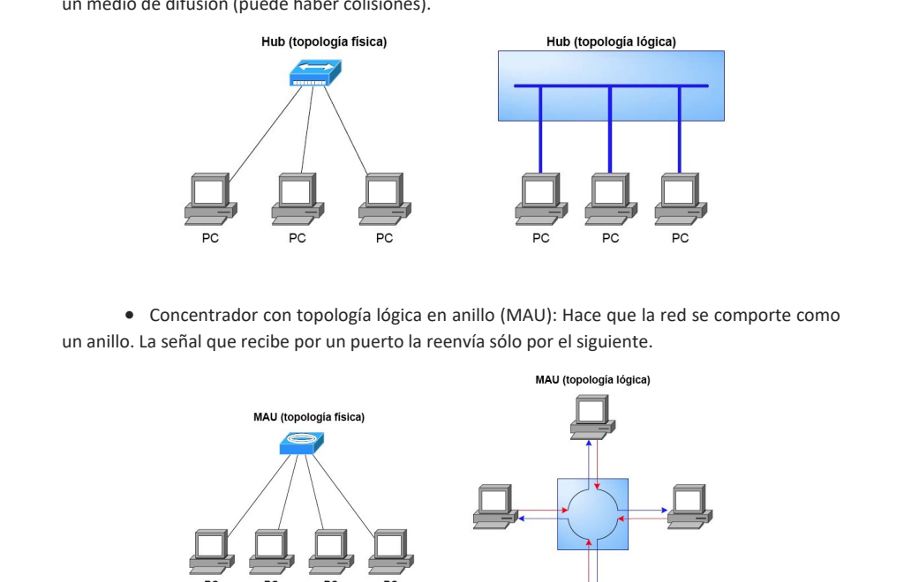
Hay dos tipos de concentradores:
- Concentradores pasivos. Envían la señal entrante directamente a través de sus puertos sin regeneración de la señal. Hoy no se usan.
- Concentradores activos. A veces denominados repetidores multipuerto, reciben las señales entrantes, procesan las señales y las retransmiten en sus potencias y definiciones originales a los equipos conectados o componentes.
Hoy en día no se utilizan. Han sido sustituidos por los switches.
Píldora de conocimiento
El hub, un megáfono; el switch, un cartero
Un hub repite todo lo que recibe por todos sus puertos, como quien habla con un megáfono: todos los equipos oyen todas las conversaciones. Por eso, cuando las redes usaban hubs, cualquiera conectado a uno podía capturar con un programa como Wireshark el tráfico de los demás.
Con un switch, cada equipo recibe solo las tramas dirigidas a él y las de difusión (broadcast), igual que un cartero que deja cada carta en su buzón.
AUTOEVALUACIÓN 9 · APARTADO 5.2.1
5.2.2. Dispositivos hardware de nivel de enlace
El uso de dispositivo de nivel físico para conectar equipos a una red de una red es una solución sencilla y útil cuando el número de ordenadores de la red es bajo y no esperamos un rendimiento elevado de la misma. En el momento en el que comenzamos agregar nuevos nodos, la red se ralentiza y no es capaz de gestionar redes relativamente grandes.
Además, puede ocurrir que tengamos una única LAN montada en un edificio o varios, y en el caso de que sean varias, éstas pueden seguir diferentes estándares, 802.3, 802.5, 802.11,… Y deben estar conectadas entre sí como si fueran una única red. Esta casuística sólo es capaz de resolverlo un dispositivo de nivel de enlace.
Los dispositivos de nivel de enlace trabajan con direcciones MAC o direcciones física. Una dirección MAC está compuesta por 48 bit, 6 bloques de 2 cifras hexadecimales que identifican de forma única a una tarjeta o dispositivo de red. Esta identificación se asigna en fábrica pero se puede cambiar por software y los móviles usan MAC aleatorias en Wifi. Lo importante es entender que la dirección MAC es la información que identifica a un host en el nivel de enlace.
Píldora de conocimiento
Lee tu propia dirección MAC
Escribe ipconfig /all en Windows (o ip link en Linux) y busca la «Dirección física». Verás algo como 3C-52-82-1A-7F-09.
Los tres primeros bytes forman el OUI, un código que el IEEE asigna a cada fabricante; con un buscador de OUI puedes averiguar quién fabricó tu tarjeta. Ojo con los móviles: para proteger la privacidad usan en Wi-Fi una MAC aleatoria distinta para cada red, y esa MAC no corresponde a ningún fabricante.
NIC (Network interface card)
Tarjeta de interfaz de red, es el elemento que permitirá la conexión del ordenador a la red, al medio físico. Existen diferentes tipos en función de la arquitectura o cableado de red que se utilice, tendremos adaptadores para redes Ethernet, Token Ring, inalámbrica, etc.
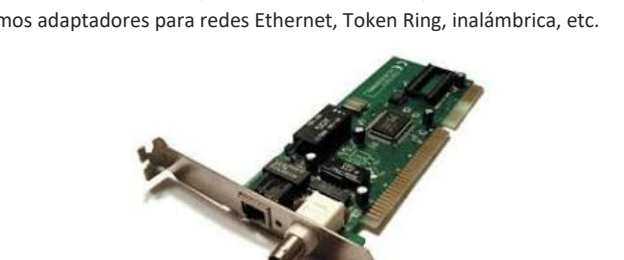
Puentes (bridges)
El puente o bridge permite interconectar dos o más segmentos de red y funciona en la capa de enlace de datos (capa 2 del modelo OSI). A diferencia del repetidor, que simplemente regenera y retransmite las señales, el bridge analiza las tramas y puede filtrar o reenviar el tráfico basándose en las direcciones MAC. De esta forma, evita que las tramas se propaguen innecesariamente a otros segmentos y reduce la carga de tráfico en ellos.
Un bridge puede interconectar segmentos que utilizan la misma tecnología, como Ethernet con Ethernet, y determinados bridges pueden también interconectar tecnologías de red diferentes, como Ethernet y Token Ring, realizando las conversiones necesarias entre sus formatos de trama.
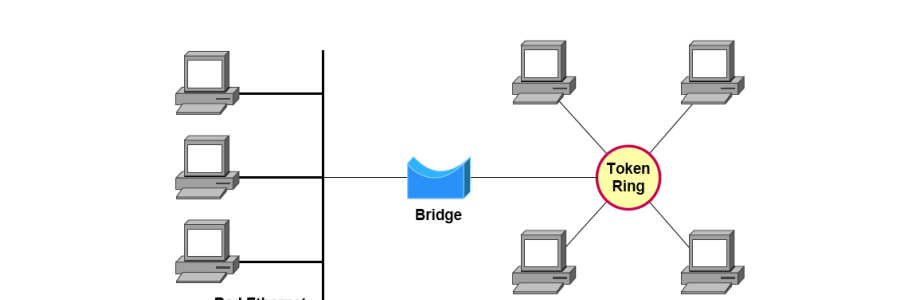
El bridge trabaja en la capa de enlace porque utiliza información de esta capa, fundamentalmente las direcciones MAC, para tomar sus decisiones de reenvío. No necesita interpretar la información de las capas superiores, como IP, TCP o HTTP.
Este dispositivo tiene dos (o más) interfaces de red, cada uno de ellos conectado a un segmento de red distinto. El puente une varios segmentos obteniendo como resultado una sola red desde el punto de vista lógico.
El puente es completamente invisible para las estaciones. Hace posible la comunicación entre segmentos sin que éstas se den cuenta de su existencia. Para lograrlo, el puente pasa automáticamente de un segmento a otro las tramas que las estaciones van dejando en el medio de transmisión. Para ello, tienen que realizar las adaptaciones necesarias:
- Convertir formatos de trama.
- Acceder a distintos medios utilizando el protocolo MAC que corresponda.
- Conversión de señales (eléctricas, electromagnéticas, etc.).
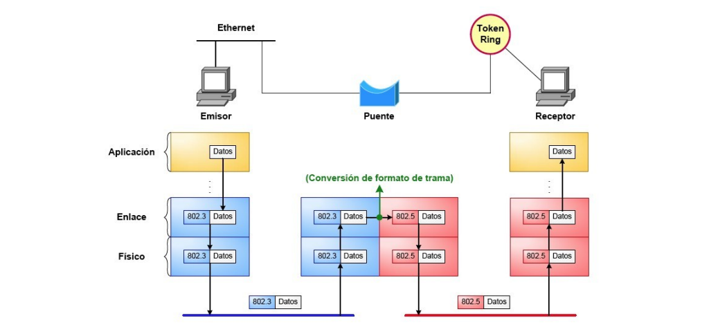
Cada segmento constituye un Dominio de Colisión, es decir, un área de red dentro de la cual pueden producirse colisiones. Los puentes pueden ser usados para mejorar el rendimiento de redes, ya que segmentan el dominio de colisión en varios dominios más pequeños aislados unos de otros.
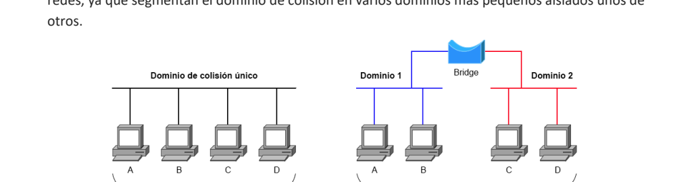
Existen varios tipos de puentes. Los más conocidos son los siguientes:
- Puente remoto.
- Puente transparente o Puente con aprendizaje.
Puente remoto: Conecta dos LAN que se encuentran separadas por una gran distancia. Se compone de dos aparatos. Cada uno se conecta a una LAN y entre ellos dos se conectan utilizando alguna tecnología que permita transmitir a larga distancia, por ejemplo, una línea dedicada o una línea telefónica.
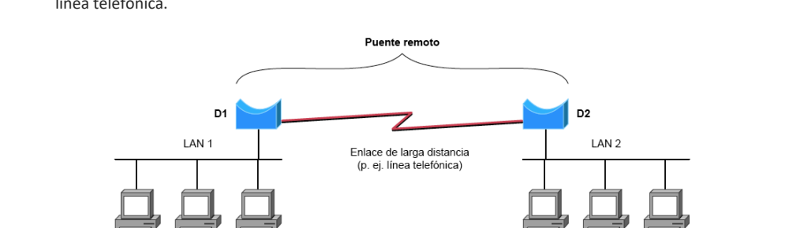
Puente transparente o Puente con aprendizaje: Es un puente que no necesita ningún tipo de configuración. Funciona en modo promiscuo: escucha todas las tramas que viajan por cualquier LAN sin descartar ninguna. Es capaz de aprender cómo ha de reenviar las tramas, simplemente escuchando lo que le llega por cada uno de sus puertos. Sólo permiten conectar tecnologías de red compatibles. Por ejemplo, Ethernet 10BaseT con Ethernet 10Base2 (aquellas cuyos formatos de trama no obligan a descartar ninguna).
Funcionamiento de los puentes transparentes:
- Al principio (recién encendido), el puente no sabe a qué ordenadores se puede llegar a través de cada uno de sus puertos. Si escucha una trama por uno de ellos, la reenvía por todos los demás (ya que el destinatario podría estar en cualquier sitio).
- El puente tiene una memoria. Conforme va escuchando tramas por un puerto (P), apunta la dirección origen (D) de la trama y la asocia a dicho puerto. Es decir, ya sabe que por medio del puerto P se llega al ordenador cuya dirección es D.
- La próxima vez que vea una trama por alguno de sus puertos, mirará en la memoria, y si aparece la dirección del destinatario, reenviará únicamente por el puerto asociado.
- Si el destino está en el mismo puerto de origen, la trama se descarta.
Punto de acceso inalámbrico (AP)
Es un dispositivo usado en las redes inalámbricas que realiza la misma función que un concentrador de cableado, es decir, centraliza las conexiones de la red. Si embargo, estos dispositivos funcionan sin cables, aunque todas las conexiones de los equipos que tienen en su radio de alcance van a parar a ellos.
El AP es un dispositivo fijo de red con varias antenas (MIMO) que se ubica en lugar estratégico.
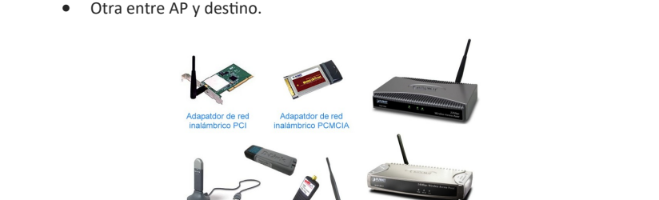
Cuando tenemos una red en modo Infraestructura las estaciones se asocian a un AP que actúa como intermediario en cualquier comunicación. Cada AP lleva un registro de las estaciones que están asociadas a él. Cuando se envía una trama son necesarias dos transmisiones a través del medio inalámbrico:
- Una entre origen y AP.
- Otra entre AP y destino.
Asociación y comunicación de estaciones con Puntos de Acceso:
Cuando una estación quiere conectarse a la red, busca un AP que esté a su alcance. Si encuentra varios, atiende al que le envíe una señal más potente.
La estación envía una solicitud de conexión al AP elegido. Si es aceptada, la dirección física de la estación quedará registrada en el AP y podrá enviar y recibir datos a través de la red inalámbrica.
El AP se comporta para las estaciones de su celda como un concentrador inalámbrico. En la conexión entre su celda y el Sistema de Distribución, el AP actúa como un puente que permite el acceso de las estaciones inalámbricas a los recursos de la red cableada.
Cada punto de acceso se distingue de los demás por su BSSID (Basic Service Set Identifier). Este identificador puede interpretarse como la dirección MAC del AP.
Identificación de Puntos de Acceso y redes inalámbricas:
Para identificar al grupo de todos los AP que componen el mismo ESS (aquellos forman parte de la misma red inalámbrica) y permitir la coexistencia de más de una WLAN distinta en la misma zona geográfica, se utiliza un identificador denominado ESSID o SSID (Extended Service Set Identifier).
El ESSID permite a las estaciones reconocer a los AP a los que pueden asociarse para formar parte de una WLAN concreta. Por otro lado, permite descartar al resto de AP que formen parte de otras redes inalámbricas cercanas.
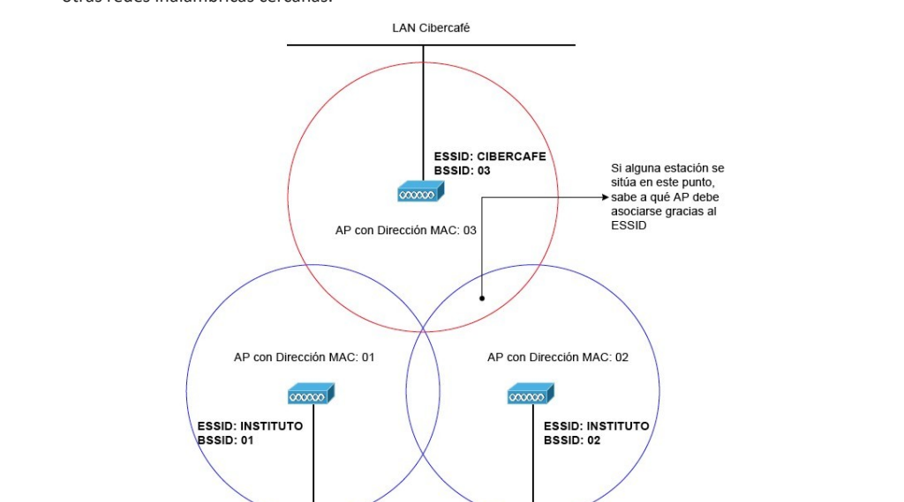
Modos de funcionamiento de los puntos de acceso:
- Modo Punto de Acceso (BSS): Es el modo normal de funcionamiento del aparato. Con él creamos una celda BSS dentro de la cual las estaciones pueden acceder al servicio de red inalámbrico.
- Modo Estación (Cliente): El punto de acceso se comporta como una estación más. Es útil cuando queremos conectarnos a una red inalámbrica y nuestro PC no dispone de tarjeta inalámbrica pero sí de tarjeta de red de cable (p. ej. Ethernet). En este caso podemos conectar el AP directamente a la tarjeta de red del PC y éste nos permitirá conectarnos, a través de él, tanto a una red ad-hoc como a una red infraestructura.
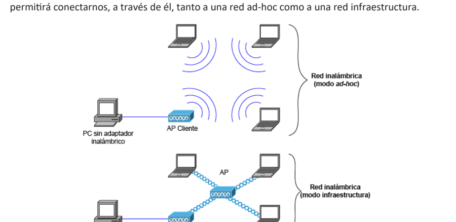
- Modo Puente: El AP se comporta como un puente inalámbrico que permite interconectar dos o más redes sin necesidad de cables. Puede ser útil, por ejemplo, para interconectar dos redes Ethernet que se encuentran en edificios distintos pero cercanos entre sí.
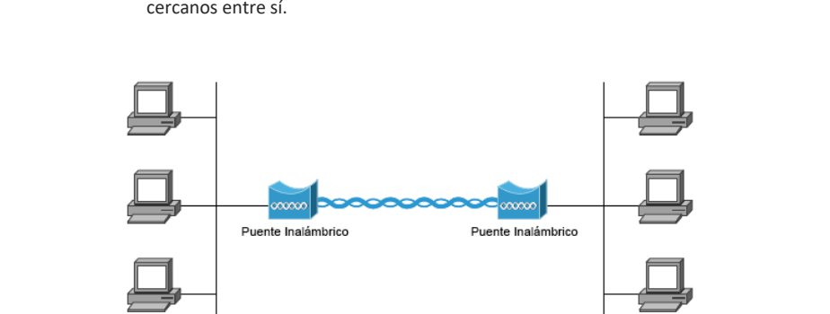
- Modo WDS (Wireless Distribution System, Sistema de Distribución Inalámbrico): El modo WDS permite al AP funcionar al mismo tiempo como AP y como puente con otros AP cercanos. El WDS permite la comunicación entre puntos de acceso de manera inalámbrica, es decir, se utiliza el medio inalámbrico como Sistema de Distribución (DS) en lugar de utilizar una red cableada.
De esta manera es posible crear una gran red inalámbrica dado que cada AP se conecta a otros puntos de acceso cercanos (que también usen WDS) y a cada AP se pueden conectar, de forma cableada o inalámbrica, todos los equipos que soporte el aparato.
Se requiere que todos los AP usen el mismo canal y compartan las claves de conexión.
Las ventajas de tener un Sistema de Distribución Inalámbrico son evidentes, pero tiene el inconveniente de que la velocidad de transmisión se reduce considerablemente.
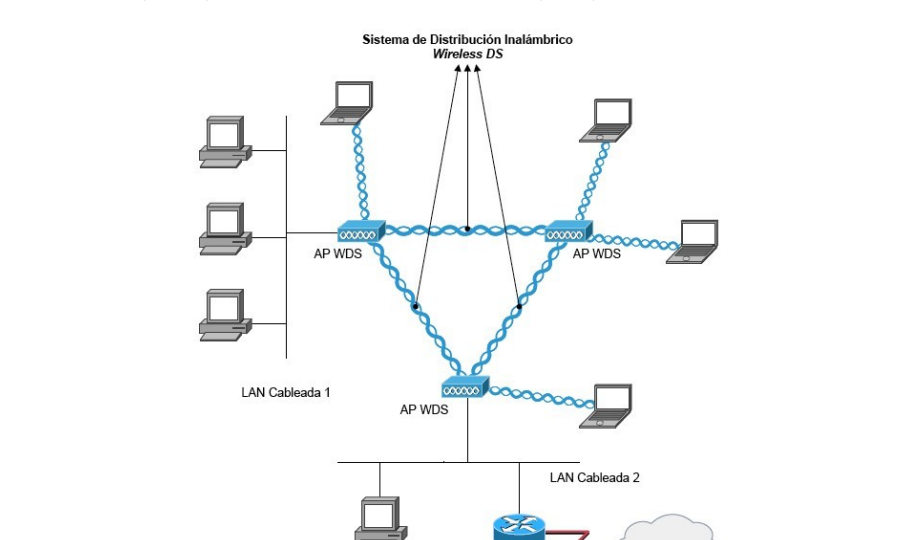
Conmutadores (switch)
El switch está destinado a reemplazar al hub. Es un dispositivo que permite la interconexión de segmentos de una misma red. Funciona a nivel de enlace reenviando tramas igual que el puente, pero a diferencia de éste, el conmutador sólo permite interconectar redes que utilizan la misma tecnología. Por otro lado, su funcionamiento es más rápido puesto que no tiene que convertir formatos de trama.
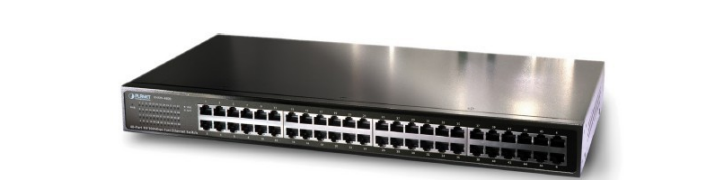
Su principal función consiste en segmentar una red para aumentar su rendimiento. El switch dedica el ancho de banda de manera completa para cada segmento. Al contrario que un concentrador, este aparato reenvía las tramas que le llegan sólo por el puerto que comunica con el destino.
El switch es capaz de conmutar en paralelo, lo cual quiere decir que, si le llegan al mismo tiempo varias tramas con distinto destino, es capaz de reenviarlas por puertos distintos a la vez (manteniendo el ancho de banda).
Con el hub esto no sucede. Si recibe dos tramas al mismo tiempo se produce una colisión, de modo que las estaciones se deben ir turnando para transmitir. Como consecuencia, el ancho de banda se divide, en el peor de los casos, por el número de estaciones que están transmitiendo.
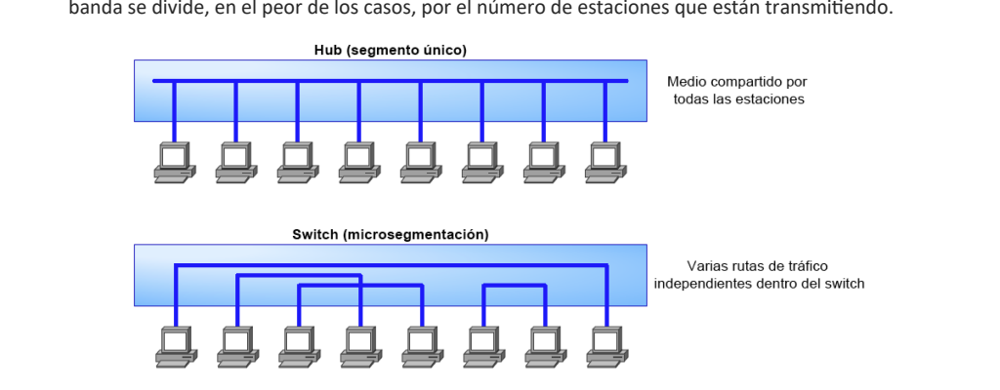
Cada puerto del switch es un dominio de colisión independiente. Si varias tramas van al mismo destino, el switch las amacena en un bufer y las envía por turno, por tanto no se producen colisiones.
Las tramas de difusión y las dirigidas a una MAC que aún no está en su tabla sí se reenvían por todos los puertos excepto el de origen. El switch separa dominios de colisión pero no dominios de difusión.
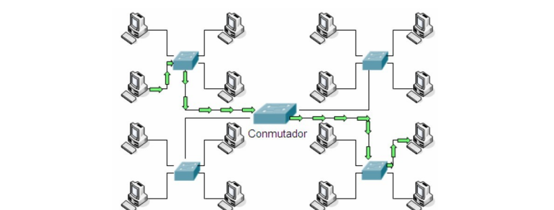
Al igual que un Hub permite centralizar las distintas conexiones de una red, pero a diferencia de éste es capaz de tomar decisiones basándose en las direcciones MAC. Podríamos pues pensar en un switch como un elemento que puede combinar la conectividad de un hub con la regulación de tráfico de un puente en cada puerto.
Nota: existen dispositivos híbridos, que trabajan a varios niveles, por ejemplo, dispositivo de nivel 2 y 3, es decir, router con varios puertos que permite la conexión de varios dispositivos formando una red gestionada como un switch.
AUTOEVALUACIÓN 10 · APARTADO 5.2.2
5.2.3. Dispositivos hardware de nivel de red
Estos dispositivos trabajan con direcciones IPv4, 32 bits agrupados en 4 números decimales e IPv6 (128 bits en hexadecimal). Se encargan de desempeñar las funciones que se indican en el nivel de red.
Routers, encaminadores o enrutador
Es un dispositivo que permite la interconexión de redes de forma totalmente independiente de la tecnología utilizada en cada una de ellas. A diferencia del switch, el router toma decisiones en base a la dirección IP del destino y no reenvía tramas de difusión de una red a otra.
Este dispositivo tiene dos (o más) interfaces de red, cada uno de ellos conectado a una red claramente diferenciada del resto. Al contrario que en el caso del puente, con el router se interconectan redes que se consideran distintas desde el punto de vista lógico, obteniendo como resultado una red de redes (conjunto de redes comunicadas entre sí).
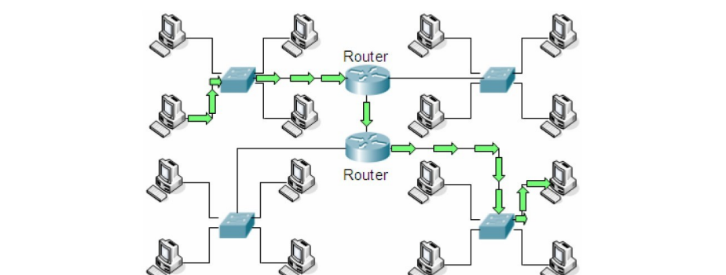
Al mover datos entre diferentes segmentos de red, los enrutadores examinan la cabecera del paquete para determinar la mejor ruta posible.
Su funcionamiento se basa en su tabla de enrutamiento que contiene información acerca del siguiente salto que debe dar la información en el camino a su destino final. No conoce el camino completo, sólo el siguiente salto.
El router trabaja a nivel de red, es decir, maneja paquetes que provienen de una y otra red. No es invisible para las estaciones. Si una estación quiere enviar un paquete a otra estación que se encuentra en una red distinta, debe conocer el router que comunica ambas redes.
Por otro lado, las redes que se comunican mediante un router, deben utilizar el mismo protocolo a nivel de red (normalmente el protocolo IP).
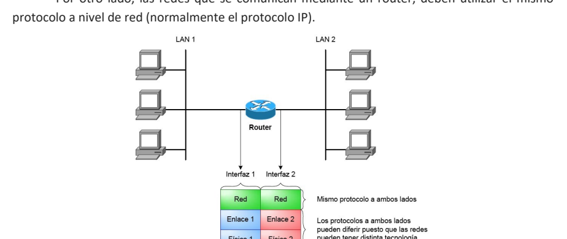
Fragmentación
Los routers pueden fragmentar paquetes de tal manera que el tamaño máximo de las tramas no es ningún impedimento para conectar redes. Los fragmentos se reensamblarán en el destino.
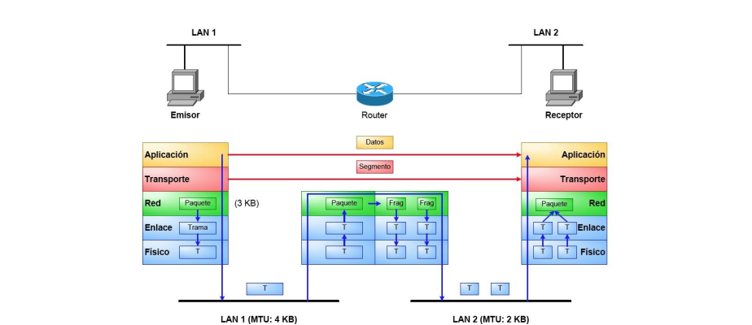
Capacidad de encaminamiento
Mientras que el puente y el switch sólo son capaces de llevar tramas de un segmento a otro dentro de una misma red, el router es capaz de llevar paquetes de una red a otra distinta. Esta capacidad de encaminamiento permite al router decidir, en cada momento, cuál es el mejor camino que debe seguir un paquete. Para ello, puede basarse en criterios bastante sofisticados:
- El número saltos o de redes intermedias que tiene que atravesar el paquete hasta llegar hasta su destino.
- La velocidad de transmisión máxima de los enlaces.
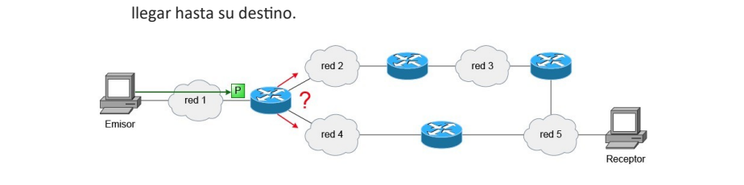
- Las condiciones de tráfico en los distintos enlaces: Puede que algunos enlaces estén más saturados que otros porque se estén enviando muchos paquetes por ellos. En ese caso, para evitar atascos, el router puede reenviar el paquete por un enlace menos ocupado.
- El coste de las transmisiones: Es una valoración general de lo que cuesta enviar el paquete por un camino u otro y puede depender de otros factores además de los anteriores.
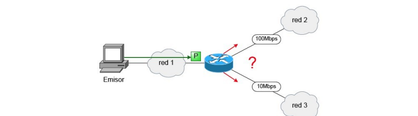
Píldora de conocimiento
Sigue el camino de tus paquetes
El comando tracert (Windows) o traceroute (Linux) muestra la lista de routers por los que pasa un paquete hasta llegar a su destino. Prueba con tracert www.juntadeandalucia.es.
Funciona gracias a un campo del paquete IP llamado TTL (tiempo de vida): cada router le resta 1 y, cuando llega a 0, descarta el paquete y avisa al origen. tracert envía paquetes con TTL 1, 2, 3… y así descubre cada salto. El TTL existe para que un paquete no dé vueltas para siempre si hay un error en las rutas.
Bloqueo de tráfico
El router también puede incorporar un cortafuegos o firewall: es un filtro que decide qué tipo de tráfico puede circular a través de el router, seleccionando unos paquetes y rechazando otros. Se utiliza como medida de seguridad, por ejemplo, para impedir que desde Internet se pueda acceder a servicios internos de una red de área local.
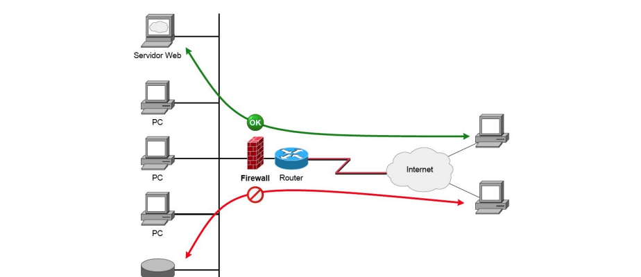
Formas de implementación:
Desde el punto de vista de la implementación, podemos distinguir dos tipos de routers:
- Router Hardware: Un aparato electrónico construido para tal fin.
- Router Software: Un ordenador con dos tarjetas de red y los programas necesarios que se encargan de realizar las operaciones del router.
Pasarela, puerta de enlace o gateway
Es un dispositivo o sistema que permite la comunicación entre redes o sistemas que utilizan protocolos de comunicación diferentes, realizando, cuando es necesario, la conversión o adaptación de los protocolos y formatos de los datos para que puedan intercambiar información.
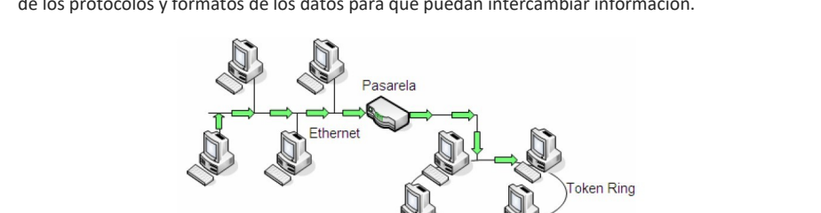
En la actualidad se llama pasarela a cualquier dispositivo que trabaje a nivel de transporte o superior. Así, podemos distinguir entre:
- Pasarela a nivel de transporte.
- Pasarela a nivel de aplicación. (la más conocida).
La pasarela es un elemento de gran complejidad. Normalmente se implementa por software utilizando un ordenador con dos interfaces de red.
Nota: En la configuración TCP/IP, la puerta de enlace predeterminada es el router al que el equipo envía los paquetes dirigidos a otras redes. En sentido estricto, también se llama pasarela al dispositibo que traduce entre arquitecturas o protocolos distintos (capas superiores)
Píldora de conocimiento
Busca tu puerta de enlace
Ejecuta ipconfig en Windows. En la línea «Puerta de enlace predeterminada» aparece la dirección IP del router de tu red (en casa suele ser algo como 192.168.1.1 o 192.168.0.1).
Cada vez que tu equipo quiere comunicarse con una IP de otra red, por ejemplo un servidor web, le entrega el paquete a esa dirección. Si está vacía o es incorrecta, podrás hablar con los equipos de tu red local, pero no con Internet.
Aplicaciones
Algunos ejemplos de su utilización son los siguientes:
- Compartición de recursos: Se trata de permitir el acceso a los recursos de una red desde otra con arquitectura distinta.
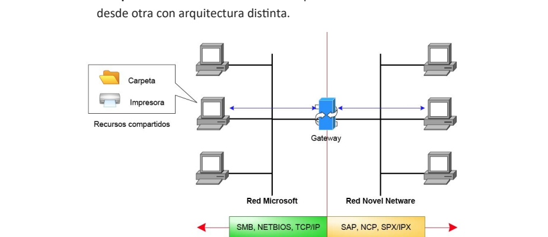
- Traducción de datos y protocolos: Una red puede utilizar formatos de datos distintos o protocolos diferentes pero análogos o compatibles en cierto sentido.
- Encapsulado de mensajes: Se utiliza cuando origen y destino utilizan el mismo protocolo, pero las redes intermedias no. Consiste en meter la información que se quiere intercambiar en paquetes de otra arquitectura de red.
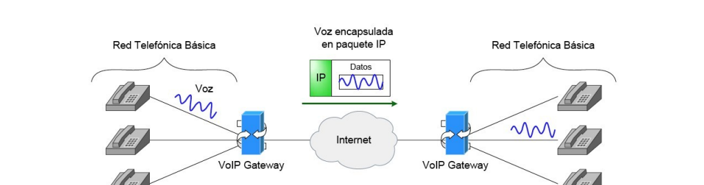
AUTOEVALUACIÓN 11 · APARTADO 5.2.3
5.3. Redes de área local
Existen diferentes tipos de redes de área local definida por el IEEE. 802.3 (Ethernet) y 802.11 (Wi-fi) son los estándares más usados actualmente.
5.3.1. Redes Ethernet (802.3)
Son redes cableadas que utilizan algún tipo de cable de los estudiados anteriormente. Emplean la técnica de control de acceso al medio CSMA/CD, es decir, cuando un ordenador de la red quiere transmitir observa el medio físico antes de hacerlo. Si el medio está libre llevará acabo la transmisión y si se produce alguna colisión también detectará esta.
La velocidad máxima de transmisión de la versión original de estas redes era de 10 Mbps.
Píldora de conocimiento
Ethernet nació en 1973
Robert Metcalfe y David Boggs diseñaron Ethernet en 1973 en el centro de investigación Xerox PARC. El nombre viene del éter, la sustancia que en el siglo XIX se creía que llenaba el espacio y por la que viajaba la luz: el cable era el «éter» que compartían todos los equipos.
Se publicó como estándar IEEE 802.3 en 1983 y, más de cincuenta años después de su invención, sigue siendo la base de casi todas las redes cableadas.
Las redes Ethernet y sus variantes se identifican utilizando una nomenclatura que especifica cómo se transmite la información, su velocidad nominal y el medio físico utilizado, entre otras características técnicas.
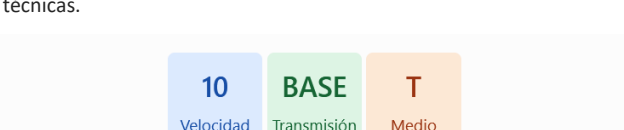
Veamos en la siguiente tabla los tipos más comunes de cableado Ethernet.
↔ Desliza horizontalmente para ver la tabla completa
| Nombre | Tipo de cable | Longitud máxima del segmento | Nº nodos por segmento (EQUIPOS QUE SE CONECTAN AL CABLE) |
|---|---|---|---|
| 10Base5 | Coaxial grueso | 500 m | 100 |
| 10Base2 | Coaxial fino | 185 m | 30 |
| 10Base-T | Par trenzado | 100 m | 2 (enlaces punto a punto) |
| 10Base-F | Fibra óptica | 2000 m | 2 (enlaces punto a punto) |
En las redes Ethernet, era común la configuración 5-4-3: máximo 5 segmentos de red, 4 repetidores y solo en 3 de estos segmentos conectan PC.
NOTA: Las características de cada una de estas redes vienen implícitas en su nombre, por ejemplo: 10Base5 (10=10Mbps, Base=Banda base y 5= 500 m (5x100). T=par trenzado y F= fibra óptica)
5.3.2. Redes Fast Ethernet
Al principio, la redes con 10 Mbps de velocidad cubrían toda la necesidad de transmisión de la época, sin embargo, según han ido pasando los años, estas velocidades han ido quedando pequeña. Por eso, en 1992 la IEEE convocó al comité de 802.3 para que desarrollará las redes de área local más rápida. Finalmente, en 1995 aparece en el 802.3u, sigue las mismas pautas que el 802.3, sólo se aumenta la velocidad de transmisión, más conocida como FAST ETHERNET.
La red Fast Ethernet usan cable de par trenzado de categoría 3 o 5, en combinación con dispositivos conmutadores switch o concentradores hub. Podemos encontrar alguna combinación con fibra óptica, siendo el cable coaxial descatalogado en esta configuración. La longitud máxima de del segmento es 100 m y alcanza velocidades de 100 Mbps.
↔ Desliza horizontalmente para ver la tabla completa
| Nombre | Tipo de cable | Longitud máxima del segmento |
|---|---|---|
| 100Base-T4 | 4 pares trenzados UTP categoría 3 | 100 m |
| 100Base-TX | Par trenzado UTP categoría 5 | 100 m |
| 100Base-FX | Fibra óptica | 2000 m |
5.3.3. Gigabit Ethernet
Nada más finalizar con el estándar 802.3u se empezó a trabajar con un nuevo estándar que aportará mayor velocidad consiguiéndose en 1998 el 802.3ab conocido como Gigabit Ethernet. Se pretendía que la red fuera una diez veces más rápida y que la recién creada Fast Ethernet,
↔ Desliza horizontalmente para ver la tabla completa
| Nombre | Tipo de cable | Longitud máxima del segmento |
|---|---|---|
| 1000Base-LX | Fibra óptica monomodo | 550 m |
| 1000Base-SX | Fibra óptica multimodo | 5000 m |
| 1000Base-CX | Cable twinax | 25 m |
| 1000Base-T | Par trenzado UTP | 100 m |
5.3.4. 10 Gigabit Ethernet
La IEEE Has seguido avanzando en el desarrollo de nuevos estándares que aumenta la velocidad de transmisión en redes cableadas, consiguiendo alcanzar los 10 Gbps.
↔ Desliza horizontalmente para ver la tabla completa
| Estándar | Nombre | Tipo de cable |
|---|---|---|
| 802.3ae (año 2002) | 10GBASE-SR y 10GBASE-LR | Fibra óptica multimodo/monomodo |
| 802.3ak (año 2004) | 10GBASE-CX4 | Cable twinaxial (cobre) |
| 802.3an (año 2006) | 10GBase-T | Par trenzado UTP de categoría 6a |
5.3.5. Redes Inalámbricas (802.11)
Son redes que usan radiofrecuencia o infrarrojo para transmitir la información. Básicamente están compuestas por un AP al que se conectan todos los demás dispositivos inalámbricos clientes. Usan bandas de uso libre (sin licencia) de 2,4 GHz o 5 GHz (o 6GHz desde Wifi 6), compartiendo está con dispositivo como microondas o teléfonos móviles. El estándar 802.11 fue creado en 1997 por la IEEE y define una red que alcanza velocidades de 1 o 2 Mbps en la banda de 2,4 GHz (también definía una versión por infrarrojos que no llegó a usarse).
Las siguientes revisiones, 802.11a, 802.11b, 802.11g, 802.11n y 802.11ac aumenta la velocidad de transmisión. Desde 2020 los dispositivos nuevosusan 802.11ax (Wif i6/6E) y desde 2024 hay equipos certificados 802.11be (Wifi 7)
Píldora de conocimiento
Los nombres comerciales del Wi-Fi
Desde 2018 la Wi-Fi Alliance usa números para distinguir las generaciones con más facilidad (entre paréntesis, año aproximado de aparición):
- Wi-Fi 4 = 802.11n (2009)
- Wi-Fi 5 = 802.11ac > 1 Gbps ( 5 GHz) (2013)
- Wi-Fi 6 = 802.11ax 802.11ac > 1 Gbps ( 2.4/5 GHz) (2019); Wi-Fi 6E es la misma tecnología usando también la banda de 6 GHz (2021)
- Wi-Fi 7 = 802.11be > 1 Gbps ( 2.4/5 GHz) (2024)
Busca en la caja de tu router o en la configuración de tu móvil qué generación utilizan.
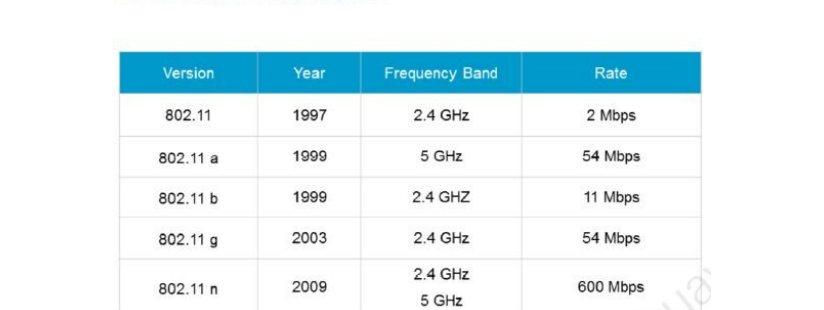
Actividad 6
Localiza información sobre el estándar WiFi-7. Redacta un documento breve donde expliques sus características y uso.
Topologías inalámbricas:
Existen diferentes topologías de red inalámbrica.
- Redes Ad-Hoc. Este tipo de redes están formada por dos o más equipos que se comunican punto a punto, no precisan de punto de acceso.
- BSS (conjunto de servicio básico). Redes formadas por un único punto de acceso. Los ordenadores se conectan como cliente al AP.
- ESS (conjunto de servicio extendido). Son redes más extensas en espacio que precisan de varios puntos de acceso. Los AP se configuran de forma que constituyen una única red, los PC clientes se conectan a ella sin saber a qué punto de acceso lo están haciendo.
AUTOEVALUACIÓN 12 · APARTADO 5.3
5.4. Cableado estructurado
Se llama cableado estructurado a la infraestructura de telecomunicaciones necesaria para conectar un edificio o un conjunto de edificios. En está infraestructura se incluyen tanto cables, como conducciones, regletas, armarios, dispositivos, espacios específicos, etc.
El cableado estructurado define algunos subsistemas para organizar la instalación del cableado. Los subsistemas de cableado estructurado son:
- Cableado de campus o de interconexión de edificios.
- Entrada de edificio, punto por donde se conectan los cables exteriores con los interiores.
- Sala de equipamiento, sala donde se distribuyen todas las conexiones del edificio.
- Cableado troncal o backbone, cableado vertical de distribución entre plantas.
- Armarios de distribución, donde confluyen los cables y donde se montan los equipos de interconexión, utilizando rack y paneles de parcheo.
- Cableado horizontal, el cableado de planta.
- Área de trabajo.
Existen estándares de cableado estructurado que especifican cómo organizar la instalación del cableado. Estos estándares especifican el tipo de cable, los conectores, las longitudes máximas de los tramos, la organización de los elementos de interconexión, la ubicación de los dispositivos, etc. Por ejemplo, en el cableado horizontal se recomienda un máximo de 90 metros desde el armario de distribución o rack hasta el área de trabajo.
Otro estándar a tener en cuenta es el ANSI/EIA/TIA 568 A y B, que entre otras cosas define la distribución de colores en la conexión del cable de par trenzado con los conectores RJ-45. Las distribuciones 568 A y B son:
↔ Desliza horizontalmente para ver la tabla completa
| Pin | 568-A | 568-B |
|---|---|---|
| 1 | blanco-verde | blanco-naranja |
| 2 | verde | naranja |
| 3 | blanco-naranja | blanco-verde |
| 4 | azul | azul |
| 5 | blanco-azul | blanco-azul |
| 6 | naranja | verde |
| 7 | blanco-marrón | blanco-marrón |
| 8 | marrón | marrón |
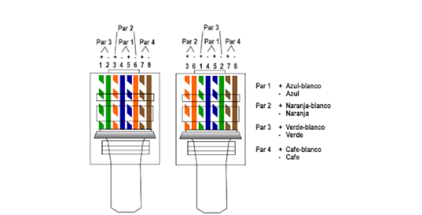
En las conexiones de red usaremos cables directos, que significa que los dos extremos tendrán la misma norma, cuando queramos conectar equipos de distinto grupo (PC-switch, router-switch). En caso de querer hacer un cable cruzado usaremos la norma 568A en un extremo y la norma 568B en el otro. Los cables cruzados se usan para conectar dos equipos del mismo grupo, por ejemplo, ordenador con ordenador, switch-switch, router-router o también para conectar directamente un PC a un router. Hoy casi todos los equipos tienen auto MDIX y detectan el tipo de cable automáticamente..
Actividad 7
Investiga como se monta un cable de red
Píldora de conocimiento
Truco: ¿cable directo o cruzado?
Pon los dos conectores RJ45 uno al lado del otro, con la pestaña hacia abajo y los contactos mirando hacia ti. Si el orden de los colores es idéntico en los dos, el cable es directo. Si el par naranja de un extremo ocupa en el otro el lugar del par verde, es cruzado (568A en un extremo y 568B en el otro).
Curiosidad: Ethernet a 10 y 100 Mbps solo usa 4 de los 8 hilos (pines 1, 2, 3 y 6); Gigabit Ethernet usa los 8.
AUTOEVALUACIÓN 13 · APARTADO 5.4
5.5. Montaje físico de una red cableada
Antes de comenzar con el montaje una red cableada debemos planificar esta, teniendo en cuenta el número de equipos que tendrá la red, la distancia entre estos equipos, si además vamos a contratar un proveedor de servicio de Internet (ISP), etc.
Así se aconseja lector que en un primer momento y sobre papel (si puede ser sobre los planos de la planta cable a) realiza un esquema de la distribución de los equipos de red. En función del número de PCs el conmutador variará ya que deberá tener en mayor o menor número de puerto, y si los equipos están alejados probablemente necesitaremos más de un switch en nuestra configuración.
Existen unas normas dictadas por ANSI/TIA/EIA que definen las pautas a seguir en el montaje, como la ANSI/TIA/EIA-568-B o ANSI/TIA/EIA-568-A que establecen las pautas sobre la configuración del cableado de conexión.
Planificación del trabajo:
- Debemos estudiar el terreno sobre el que se montará la red. Es aconsejable disponer del plano del edificio o planta que se quiera cablear. Si no es posible se debe visitar el lugar antes de comenzar a trabajar al menos una vez.
- Tras la entrevista con la persona que encarga encargan el montaje de la red se deben extraer datos referidos al equipo a montar y posición de los mismos. Dibujaremos sobre plano esto.
- Debemos localizar una zona, sala del cableado, que sea óptima para la instalación de los dispositivos de red. Una vez tengamos claro donde centralizar la red debemos asegurarnos que la distancia el equipo más alejado no sea superior a 90 m, ya que vamos a usar cable par trenzado. Si existen equipo ubicado a mayor distancia será necesario buscar otra sala de cableado. En caso de queda debamos cablear un edificio con varias plantas, debemos montar una sala de cableado en cada una de ellas y unirla mediante cableado backbone.
- Será el momento de elegir tipo y metro de cable que vamos a usar, así como los dispositivos de red, desde tarjeta de red para los PC a switch y router. En función del número de puestos necesitaremos switch con más o menos puertos o más de un switch. Igual sucederá con los routers que se acogerá una función de las redes que se vayan a configurar. Básicamente se necesitará:
- Rack. Para montaje de los dispositivos de red.
- Patch Panel. El cableado procedente de cada host no se conecta directamente al conmutador, sino que llega a un patch panel quién será el que se conecte con él.
- Switch y routers.
- Latiguillos. Cables par trenzado de corta longitud para conexión entre paneles y dispositivo o entre dispositivos.
- Bobina de cable par trenzado y conectores RJ 45. Para el cableado horizontal.
- Cable de fibra óptica o par trenzado de velocidad elevada. Para conexiones backbone.
- Canaleta. Para ocultar y direccionar los cables de red hacia los PC.
- Roseta conectores a los que llega el cable horizontal y que usará el PC para conectarse a la red.
- Latiguillos de puesto de trabajo. Para la conexión del PC a la roseta.
- Se confecciona un presupuesto con todos los componentes además del precio de mano de obra. Este documento se entregará al cliente. Si es aprobado comenzaremos con el montaje.
MONTAJE:
- Colocaremos la canaleta y roseta.
- Distribuiremos el cableado horizontal a través de la canaleta montada, conectando cada cable a la roseta que le corresponda.
- En la sala de comunicaciones montaremos el rack, disponiendo los diferentes dispositivos de red y patch panels.
- Puentearemos cada puerto de cada conmutador con un puerto de un patch panel de los instalados.
- Conectaremos cada cable horizontal a un puerto de uno de los patch panels.
- Verificaremos las conexiones de red.
- Conectaremos los latiguillos del PC a la roseta correspondiente.
- Configuraremos lo dispositivo de red, switch en caso de configuraciones VLAN, routers y sistema operativo de cada host.
Nota: para el montaje de redes inalámbricas necesitaremos un punto de acceso al que se conectarán todas las NIC, además, los AP se conectarán vía cable a un switch.
6. DISEÑO LÓGICO Y FÍSICO DE UNA RED #
El diseño lógico define la arquitectura de la red, mientras el diseño físico establece el detalle de los componentes y configuraciones. Dichos diseños tienen que crearse en función de las necesidades tanto actuales como previsibles de la empresa, con el objetivo de obtener el mayor rendimiento de la red y el retorno de la inversión en cuanto sea posible. Con frecuencia se cae en el error de no valorar adecuadamente el diseño cuando es uno de los servicios más estratégicos: resulta que se quiere ahorrar un poco de dinero en el diseño para después perder cantidades muy importantes en falta de rendimiento y velocidad de la red, y consecuentemente en la productividad de los usuarios, o en costes de comunicaciones. Se debe tener en cuenta algunos aspectos importantes tanto el diseño físico como en el lógico:
- Físico:
- Distancia entre los nodos o terminales hacia el conmutador.
- Realizar el cableado bajo normas y estándares de certificación.
- Verificar la tecnología que se podría utilizar en la empresa, ya sea fibra óptica, microondas, satelital, cableado, entre otros.
- Lógico:
- Según el tipo de arquitectura y las necesidades se implementará el diseño más factible para la empresa.
Planificación:
Se genera un informe que indique en detalle los cambios estructurales a realizar, así como una propuesta del cronograma de instalación del cableado y los elementos de comunicación y control, dicho informe debe contener un plano de la edificación donde se va a realizar la instalación del cableado en el cual se indiquen las canalizaciones, el cableado y los equipos de comunicación, control y administración necesarios para implantar la red de transmisión de datos.
Con la información recabada se realizará un diseño de la red a instalar tomando en cuenta los siguientes aspectos:
- Costo de instalación
- Satisfacción de las necesidades de comunicación establecidas previamente.
- No se debe entorpecer la circulación de personas en las oficinas, ni hacer que este tráfico pueda ocasionar daños a corto o mediano plazo a la instalación del cableado.
Representación simbólica de la red lógica:
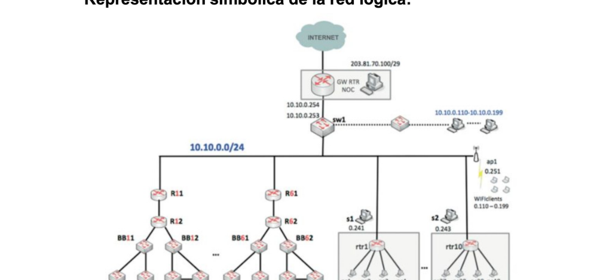
Representación simbólica de la red física:
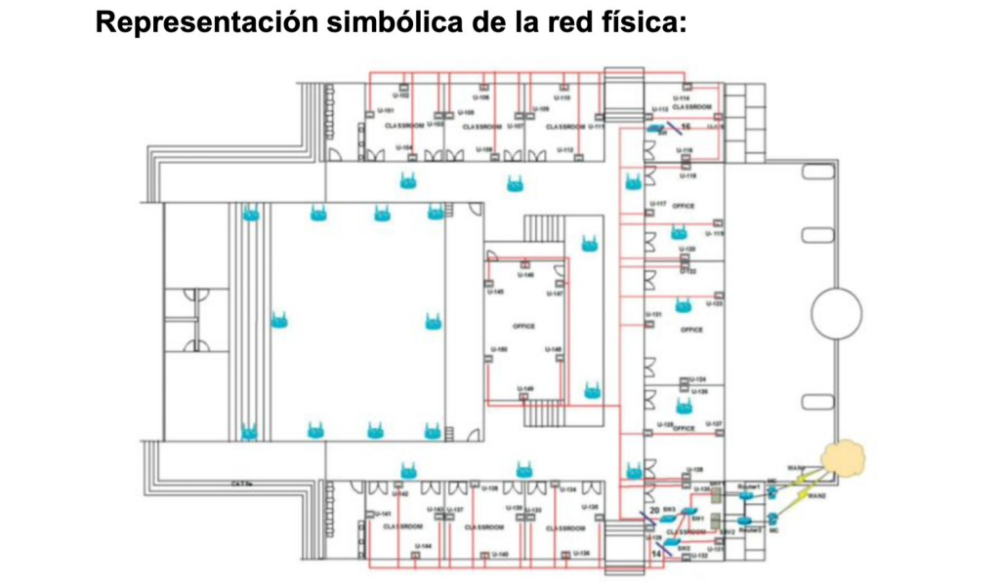
Vamos trabajar con la herramienta Cisco Packet Tracer versión estudiante, que nos la podemos descargar en el siguiente enlace de forma gratuita, apuntándonos en el curso.
Aunque esta herramienta tiene copyright de Cisco, esta versión permite su uso a profesores y estudiantes.
Esta herramienta es muy sencilla de manejar en los aspectos básicos de cada uno de los componentes que forman nuestra red, y nos permitirá configurarlos, prácticamente como si tuviésemos el dispositivo físicamente.
Píldora de conocimiento
Packet Tracer a cámara lenta
Packet Tracer tiene un modo Simulación (pestaña en la esquina inferior derecha) que detiene el tiempo: verás cada paquete como un sobre que se mueve de un dispositivo a otro y podrás abrirlo para ver qué contiene.
Es la mejor forma de comprobar lo que has estudiado en esta unidad: cómo un hub repite las tramas por todos los puertos, cómo un switch aprende direcciones MAC o cómo un router reenvía los paquetes hacia otra red.
Para aprender a utilizarla nos vamos a apoyar en una serie de video tutoriales, que podemos encontrar en el siguiente enlace: https://youtu.be/aXz43mgQxGM
También puedes ver más información en los apuntes sobre Cisco Packet Tracer.
SOLUCIONES DE LAS AUTOEVALUACIONES #
Intenta resolver cada autoevaluación antes de mirar aquí. Si fallas una pregunta, lee la explicación y vuelve al apartado correspondiente.
Autoevaluación 1 · Apartado 1
1 → c. El driver es un programa; los otros tres son componentes físicos.
2 → c. El conductor es el programa; los mandos son el medio con el que el programa actúa sobre el vehículo (hardware), igual que el sistema operativo.
3 → b. La a) es falsa porque una aplicación puede ser un único programa. La c) y la d) confunden software con hardware.
4. Respuesta abierta. Debe aparecer la idea de intermediario: el sistema operativo permite que los programas usen el hardware sin tener que controlarlo directamente. Ejemplo válido: un camarero que lleva los pedidos de los clientes (programas) a la cocina (hardware).
Autoevaluación 2 · Apartado 2
1 → b. El PC guarda la dirección de la próxima instrucción y se incrementa después de cada lectura. No cuenta ciclos ni guarda resultados.
2 → b. La unidad de control busca, decodifica y genera las señales de control; la ALU es la que realiza las operaciones.
3 → b. Es la idea del programa almacenado. Separar las memorias (opción a) es la arquitectura Harvard.
4. Búsqueda → decodificación → ejecución.
5. Porque los registros tienen un tiempo de acceso mucho menor (del orden de cien veces menor) que la memoria principal, y la CPU los usa continuamente.
6. El bus de direcciones.
Autoevaluación 3 · Apartado 3.2
1. a) simplex; b) semidúplex; c) dúplex; d) simplex.
2. a) Verdadera: para comunicar información hay que transportar una señal. b) Falsa: puede transmitirse una señal que no lleva información útil para el receptor (por ejemplo, ruido).
3. Portátil: ETD. Módem: ECD. Servidor web: ETD.
4 → c. Cambia la naturaleza de la señal (de sonido a electricidad).
5. Protocolo de comunicación.
Autoevaluación 4 · Apartado 3.3
Correctas: 2 y 4.
1) Falsa: dice «siempre», y montar una red tiene costes (cableado, dispositivos, mantenimiento).
2) Verdadera: compartir recursos es la finalidad principal de una red.
3) Falsa: dice «siempre», y en una red entre iguales (P2P) no hay gestión centralizada.
4) Verdadera: compartir información y recursos (como la conexión a Internet) son los motivos habituales.
Autoevaluación 5 · Apartado 3.4
1. a) PAN; b) LAN; c) CAN; d) WAN.
2 → b. El terminador absorbe la señal; si no estuviera, la señal rebotaría en el extremo del cable.
3. 6 · 5 / 2 = 15 enlaces.
4 → c. La a) describe la conmutación de circuitos y la b) la conmutación orientada a la conexión (circuito virtual).
5. En cliente-servidor hay equipos (servidores) que ofrecen servicios al resto; en P2P cada equipo actúa a la vez como cliente y como servidor.
6. Estrella.
Autoevaluación 6 · Apartado 4
1. a) ETD (terminal de propósito específico); b) ECD; c) medio; d) transductor (luz → electricidad); e) otro elemento del sistema de comunicación.
2. El terminal simple solo introduce y muestra información (teclado y pantalla); el autónomo tiene procesador y memoria y puede procesarla por sí mismo.
3. De propósito específico: se ha creado solo para una función concreta (cobrar).
Autoevaluación 7 · Apartado 5
Nodo de red – 2; Estación de trabajo – 4; Router – 1; Switch – 3.
Autoevaluación 8 · Apartado 5.1
1 → b. Todas las categorías tienen el mismo límite de 100 m (salvo la 8); lo que cambia es la frecuencia que soportan y, con ella, la velocidad.
2. Categoría 6A (500 MHz, 10 Gb/s hasta 100 m). La categoría 6 solo alcanza 10 Gb/s en distancias más cortas.
3. a) Verdadero. b) Falso: la fibra transmite luz y no le afectan las interferencias electromagnéticas. c) Verdadero.
4. Fibra óptica: no le afectan las interferencias de la maquinaria y supera con holgura los 100 m del par trenzado.
5. Porque por encima de unos 100 MHz la señal viaja en línea recta: es una transmisión direccional y no debe haber obstáculos entre las antenas.
Autoevaluación 9 · Apartado 5.2.1
1 → b. Amplificar con el ruido (opción a) es lo que hace un amplificador con señales analógicas.
2. Porque el amplificador también amplifica el ruido, que se va acumulando en cada etapa.
3 → b. El hub no sabe dónde está el destino: repite la señal por todos los demás puertos.
4. Se produce una colisión y los equipos tienen que volver a transmitir por turnos.
Autoevaluación 10 · Apartado 5.2.2
1. 24 dominios de colisión (uno por puerto) y 1 dominio de difusión.
2. a) Anota A → puerto 1. No conoce a B: envía la trama por los puertos 2 y 3. b) Anota B → puerto 2. Conoce a A: envía solo por el puerto 1. c) Anota C → puerto 3. Es difusión: envía por los puertos 1 y 2. d) No anota nada nuevo (A ya estaba). Conoce a C: envía solo por el puerto 3.
3 → b. 48 bits, en 6 bloques de 2 cifras hexadecimales.
4. El puente puede unir tecnologías distintas convirtiendo el formato de las tramas; el switch solo une redes de la misma tecnología, pero es más rápido porque no tiene que convertir formatos.
5. Modo puente.
Autoevaluación 11 · Apartado 5.2.3
1 → b. La MAC la usa el switch; el router decide por la IP de destino.
2 → b. El router no conoce el camino completo, solo el siguiente salto.
3. Tres: el router no reenvía las difusiones de una red a otra.
4. El equipo de destino. Los routers pueden fragmentar, pero no reensamblan.
5. Al router, que es su puerta de enlace predeterminada. Su dirección está en la configuración TCP/IP del equipo (la muestra ipconfig).
6. Hub (físico) → switch (enlace) → router (red).
Autoevaluación 12 · Apartado 5.3
1. 100BASE-TX: 100 Mb/s, transmisión en banda base, cable de par trenzado. 1000BASE-T: 1000 Mb/s (1 Gb/s), banda base, par trenzado.
2. Categoría 6A.
3. Antes de transmitir, el equipo escucha el medio. Si está libre, transmite; si mientras transmite detecta una colisión, deja de transmitir y vuelve a intentarlo más tarde.
4. a) Red ad-hoc. b) ESS (conjunto de servicio extendido).
5. 2,4 GHz y 5 GHz y, desde Wi-Fi 6E, también 6 GHz.
Autoevaluación 13 · Apartado 5.4
1. 568B: blanco-naranja. 568A: blanco-verde.
2. a) Directo; b) cruzado; c) cruzado; d) directo; e) cruzado. Hoy casi todos los equipos tienen Auto-MDIX y funcionan con cualquiera de los dos.
3. 90 m. Sumando los latiguillos de los dos extremos, el canal completo no debe superar los 100 m.
4. Cableado troncal o backbone.